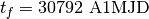

User Guide¶
This section contains the user guide for CSALT and the GMAT Optimal Control subsystem that is built upon CSALT. To provide context, the high-level architecture of CSALT and the GMAT Optimal Control subsystem is shown in Fig. 4. The core of the system is the CSALT API. The GMAT Optimal Control plugin is built upon the CSALT API and is integrated into GMAT using the GMAT plugin interface.
{kind=link}
Fig. 4 High-level architecture of CSALT and GMAT Optimal Control.¶
This section contains two tutorials and extensive reference material for CSALT and GMAT Optimal Control components. Tutorials include how to use CSALT as a stand-alone C++ library, and how to use the GMAT Optimal Control subsystem. For each interface, we include a high-level overview of the classes/Resources used to specify optimal control problems and intermediate-level details for key classes. Additional detailed reference material is provided in User Interface Specification and EMTG Spacecraft File Specification and via Doxygen output and extensive examples that are included in the CSALT distribution.
Tutorial: Setting Up an Optimal Control Problem in CSALT¶
In this section, we describe how to set up an optimal control problem using the Brachistichrone problem as an example. We begin by providing an overview of the problem setup procedures for a general optimal control problem, then present the Brachistichrone problem statement, followed by the C++ source code for the Brachistichrone problem.
CSALT C++ User Interface Component Overview¶
The CSALT API is composed of several classes shown in Fig. 5. The user classes that define the API are Trajectory, Phase, UserPathFunction, UserPointFunction, OptimalControlFunction, and Publisher. Note that UserFunction is an abstract base class that contains commonality between path and point functions.
{kind=link}
Fig. 5 CSALT C++ user classes.¶
The responsibilities of classes in the CSALT API are highlighted in Table 11.
Class |
Required? |
Responsibility |
|---|---|---|
Trajectory |
Yes |
Trajectory is the container for all phases in the problem and for the UserPointFunction and UserPathFunction objects. Internally, the Trajectory concatenates functions and Jacobians provided on different phases and from UserPointFunction. |
Phase |
Yes |
Phase defines the transcription employed and manages/concatenates the defect constraints, integral cost, and algebraic path functions. |
UserPathFunction |
Yes |
Computes path function values (dynamics, integral cost, and algebraic path constraints) and, optionally, analytic Jacobians of path functions. This class provides the generic interface for those computations. The user provides problem-specific functions by deriving a path function class from the UserPathFunction base class. |
UserPointFunction |
Yes |
Computes boundary functions (cost and algebraic point constraints) and, optionally, analytic boundary Jacobians. This class provides the generic interface for those computations. The user provides problem-specific functions by deriving a point function class from the UserPointFunction base class. |
OptimalControlFunction |
No |
A helper class for optimal control functions and Jacobians. This class provides a generic interface for optimal control functions and helps modularize problems that have large numbers of boundary constraints and allows the user to re-use functions across different problems without duplicating code. |
Publisher |
No |
A helper class to publish data before, during, or after optimization. |
Configuring Files for Tutorial¶
Configuring and executing files for the tutorial is done by adding the example problem to the already existing example problems.
Six C++ files must be created: a driver .cpp file, a path function .cpp file, a point function .cpp, and header .hpp files for each .cpp file. The driver class derives from the class; the path function class derives from the ; and the point function class derives from the class. Driver .cpp and .hpp files are placed in the gmat/src/csaltTester/src/TestOptCtrl/drivers directory. Path function and point function .cpp and .hpp files are placed in the gmat/src/csaltTester/src/TestOptCtrl/src/pointpath directory. Depending on the method of compilation used, paths to .cpp files may need to be added to the list of in gmat/src/csaltTester/CMakeLists.txt.
Once the driver class, point function class, and path function class are created, the problem is added to the list of test problems in TestOptCtrl.cpp. Within TestOptCtrl.cpp, do the following:
Find text “”. At the end of the list of driver objects, add your own in the same style as the others. Note that this code block occurs in two places in the file, and both locations should be updated.
Directly below the previously referenced list of objects, add a call to the method of your driver to the end of the list of methods already in the file. Note that this code block occurs in two places in the file, and both locations should be updated.
Delete your driver object. (Add to list of delete calls directly below list of Run calls.) Note that this code block occurs in two places in the file, and both locations should be updated.
Find text “”. At the end of the list of blocks, add a new block for your own CSALT driver. Note that this code block occurs in two places in the file, and both locations should be updated.
Find text “”. At the end of the list of additions to the variable – but prior to the new line before the line – add to the name of your example, modeled after the problems already listed in the file. Note that this code block occurs in two places in the file, and both locations should be updated.
Find text “”. Add a line creating your driver with an unused pointer name at the end of the block of pointer declarations. Scroll down to the next blocks of code, and add a command and command for the pointer to your driver class.
Find text “”. Add a case block for your driver to the bottom of the already existing list of case blocks.
Overview of CSALT Configuration Process¶
The key steps in setting up an optimization problem in CSALT are:
Configure the Path Functions
Configure the Boundary Functions
Configure the Phases and Transcription
Configure the Trajectory
Solve the problem and examine results
To solve the Brachistichrone problem using CSALT, let’s begin with the Brachistichrone problem statement:
Minimize the final time
Subject to the dynamics
the initial boundary conditions
and the final boundary conditions
Step 1: Configure the Path Functions¶
Path functions, including dynamics, algebraic path constraints, and, if applicable, an integral cost function, are implemented by deriving a class from the CSALT UserPathFunction base class and implementing the EvaluateFunctions() and EvaluateJacobians() methods. The EvaluateFunctions() method is required. The EvaluateJacobians() method is required but may be empty. If EvaluateJacobians() does not set a particular Jacobian, CSALT will finite-difference that Jacobian. For the Brachistichrone example, we have provided all path function Jacobians analytically in the source code.
The dynamics model for the Brachistichrone problem is:
The EvaluateFunctions() method that implements those dynamics is shown below. For this example, the Path Function class is named BrachistichronePathObject.
// Class constructor
BrachistichronePathObject::BrachistichronePathObject() :
UserPathFunction(),
gravity(-32.174)
{
}
// The EvaluateFunctions method
void BrachistichronePathObject::EvaluateFunctions()
{
// Extract parameter data
Rvector stateVec = GetStateVector();
Rvector controlVec = GetControlVector();
// Compute the ODEs
Real u = controlVec(0);
Real x = stateVec(0);
Real y = stateVec(1);
Real v = stateVec(2);
Real xdot = v * sin(u);
Real ydot = v * cos(u);
Real vdot = gravity * cos(u);
// Set the ODEs by calling SetFunctions with DYNAMICS enum value
Rvector dynFunctions(3, xdot, ydot, vdot);
SetFunctions(DYNAMICS, dynFunctions);
}
void BrachistichronePathObject::EvaluateJacobians()
{
// Get state and control
Rvector stateVec = GetStateVector();
Rvector controlVec = GetControlVector();
Real u = controlVec(0);
Real x = stateVec(0);
Real y = stateVec(1);
Real v = stateVec(2);
// The dynamics state Jacobian
Real dxdot_dv = sin(u);
Real dydot_dv = cos(u);
Rmatrix dynState(3, 3,
0.0, 0.0, dxdot_dv,
0.0, 0.0, dydot_dv,
0.0, 0.0, 0.0);
// The dynamics control Jacobian
Real dxdot_du = v * cos(u);
Real dydot_du = -v * sin(u);
Real dvdot_du = -gravity * sin(u);
Rmatrix dynControl(3, 1, dxdot_du, dydot_du, dvdot_du);
// The dynamics time Jacobian
Rmatrix dynTime(3, 1, 0.0, 0.0, 0.0);
// Set the Jacobians
SetJacobian(DYNAMICS, STATE, dynState);
SetJacobian(DYNAMICS, CONTROL, dynControl);
SetJacobian(DYNAMICS, TIME, dynTime);
}
Note that CSALT uses GMAT variable types like Real, Rvector, and Rmatrix.
Step 2: Configure the Boundary Functions¶
Boundary functions, including algebraic constraints and cost function, are implemented by deriving a class from the CSALT UserPointFunction base class and implementing the EvaluateFunctions() method. The EvaluateFunctions() method is required.
The boundary functions for the Brachistochrone problem are
subject to the initial boundary conditions
and the final boundary conditions
The EvaluateFunctions() method that implements those boundary functions is shown below. For this example, the Point Function class is named BrachistichronePointObject.
//-------------------------------------------------------------------------
// void EvaluateFunctions()
//-------------------------------------------------------------------------
void BrachistichronePointObject::EvaluateFunctions()
{
// Extract parameter data
Rvector stateInit = GetInitialStateVector(0);
Rvector stateFinal = GetFinalStateVector(0);
Real tInit= GetInitialTime(0);
Real tFinal = GetFinalTime(0);
Real xInit = stateInit(0);
Real yInit = stateInit(1);
Real vInit = stateInit(2);
Real xFinal = stateFinal(0);
Real yFinal = stateFinal(1);
Real vFinal = stateFinal(2);
// Dimension the function array and bounds arrays
Integer numFunctions = 8;
Rvector funcValues(numFunctions);
Rvector lowerBounds(numFunctions);
Rvector upperBounds(numFunctions);
// Initial Time Constraint: t_0 = 0;
funcValues(0) = tInit;
lowerBounds(0) = 0.0;
upperBounds(0) = 0.0;
// Constraint on initial x value: x(0) = 0.0;
funcValues(1) = xInit;
lowerBounds(1) = 0.0;
upperBounds(1) = 0.0;
// Constraint on initial y value : y(0) = 0.0;
funcValues(2) = yInit;
lowerBounds(2) = 0.0;
upperBounds(2) = 0.0;
// Constraint on initial v value : v(0) = 0.0;
funcValues(3) = vInit;
lowerBounds(3) = 0.0;
upperBounds(3) = 0.0;
// Final time constraint : 0.0 <= t_F = 10;
funcValues(4) = tFinal;
lowerBounds(4) = 0;
upperBounds(4) = 10.00;
// Constraint on final x value : x(t_f) = 1.0;
funcValues(5) = xFinal;
lowerBounds(5) = 1.0;
upperBounds(5) = 1.0;
// Constraint on final y value; -10 <= y(t_f) <= 10
funcValues(6) = yFinal;
lowerBounds(6) = -10.0;
upperBounds(6) = 10.0;
// Constraint of final v value: -10 <= v(t_f) <= 0.0
funcValues(7) = vFinal;
lowerBounds(7) = -10.0;
upperBounds(7) = 0.0;
// Set the cost and constraint functions
Rvector costFunc(1, tFinal);
SetFunctions(COST, costFunc);
SetFunctions(ALGEBRAIC, funcValues);
SetFunctionBounds(ALGEBRAIC, LOWER, lowerBounds);
SetFunctionBounds(ALGEBRAIC, UPPER, upperBounds);
}
Note that interfaces for configuring problems with large numbers of boundary constraints and/or analytic Jacobians are explained in Boundary Functions Reference.
Step 3: Configure the Phases and Transcription¶
The next step in configuring the Brachistochrone problem is to set up a Phase. (This example is a single-phase problem.) The Phase object contains the configuration for the selected transcription, the bounds on optimization parameters (e.g., time, state, and control), and the initial guesses for those parameters. In this example, the phase is configured to use Radau orthogonal collocation with two equally spaced mesh intervals, each containing five points. (The mesh interval configuration and initial-guess options are presented in more detail in Phase Reference).
// Create a phase and set transcription configuration
RadauPhase *phase1 = new RadauPhase();
std::string initialGuessMode = "LinearNoControl";
Rvector meshIntervalFractions(3,-1.0, 0.0,1.0);
IntegerArray meshIntervalNumPoints;
meshIntervalNumPoints.push_back(5);
meshIntervalNumPoints.push_back(5);
// Set time properties
Real timeLowerBound = 0.0;
Real timeUpperBound = 100.0;
Real initialGuessTime = 0.0;
Real finalGuessTime = .3;
// Set state properties
Integer numStateVars = 3;
Rvector stateLowerBound(3, -10.0, -10.0, -10.0);
Rvector stateUpperBound(3, 10.0, 0.0, 0.0);
Rvector initialGuessState(3, 0.0, 0.0, 0.0);
Rvector finalGuessState(3, 2.0, -1.0, -1.0);
// Set control properties
Integer numControlVars = 1;
Rvector controlUpperBound(1, 10.0);
Rvector controlLowerBound(1, -10.0);
// Set the phase configuration
phase1->SetInitialGuessMode(initialGuessMode);
phase1->SetInitialGuessArrays(timeArray, stateArray, controlArray);
phase1->SetNumStateVars(numStateVars);
phase1->SetNumControlVars(numControlVars);
phase1->SetMeshIntervalFractions(meshIntervalFractions);
phase1->SetMeshIntervalNumPoints(meshIntervalNumPoints);
phase1->SetStateLowerBound(stateLowerBound);
phase1->SetStateUpperBound(stateUpperBound);
phase1->SetStateInitialGuess(initialGuessState);
phase1->SetStateFinalGuess(finalGuessState);
phase1->SetTimeLowerBound(timeLowerBound);
phase1->SetTimeUpperBound(timeUpperBound);
phase1->SetTimeInitialGuess(initialGuessTime);
phase1->SetTimeFinalGuess(finalGuessTime);
phase1->SetControlLowerBound(controlLowerBound);
phase1->SetControlUpperBound(controlUpperBound);
Step 4: Configure the Trajectory¶
The next step is to add the path function, boundary function, and phase objects to a Trajectory.
// Create a trajectory object
// To illustrate the high level approach, default tolerances are used.
traj = new Trajectory();
// Create the path and point function objects and add to Trajectory
pathObject = new BrachistichronePathObject();
pointObject = new BrachistichronePointObject();
traj->SetUserPathFunction(pathObject);
traj->SetUserPointFunction(pointObject);
// Add the Phase to the Trajectory
std::vector<Phase*> phaseList;
phaseList.push_back(phase1);
traj->SetPhaseList(phaseList);
Step 5: Run the Optimizer and Examine the Solution¶
Now that the path, boundary, phase, and trajectory objects are configured, we are ready to optimize the problem and write the solution to a file.
// Optimize the problem
traj->Optimize();
// Write the solution to file
std::string solutionFile = "DocTestFile.och";
traj->WriteToFile(solutionFile);
The console output for the Brachistichrone problem solved using SNOPT is shown in Fig. 6.
{kind=link}
Fig. 6 Brachistichrone problem optimization console output.¶
In the example above, we called WriteToFile() to write the state and control history to a text file. The contents of the file are shown in Fig. 7.
{kind=link}
Fig. 7 Brachistichrone problem file output.¶
Additional Tutorials¶
The C++ version of CSALT is distributed with many example problems. The examples are located in the folder gmat/src/csaltTester/src/TestOptCtrl/src. The subfolders “drivers” and “pointpath” contain the test drivers and point and path objects, respectively.
Tutorial: Setting up an Optimal Control Problem in MATLAB¶
In this section, we describe how to set up an optimal control problem using the Brachistichrone problem as an example. We begin by providing an overview of the problem setup procedures for a general optimal control problem, then present the Brachistichrone problem statement, followed by the MATLAB source code for the Brachistichrone problem.
MATLAB User Interface Component Overview¶
The MATLAB API is composed of several classes shown in Fig. 8. The user classes that define the API are Trajectory, Phase, UserPathFunction, and UserPointFunction. Note that UserFunction is an abstract base class that contains commonality between path and point functions. The user implements path and boundary functions for a problem by deriving from the UserPathFunction and UserPointFunction base classes as shown in Fig. 8.
{kind=link}
Fig. 8 CSALT MATLAB user classes.¶
The responsibilities of classes in the CSALT API are highlighted in Table 12.
Class |
Required? |
Responsibility |
|---|---|---|
Trajectory |
Yes |
Trajectory is the container for all phases in the problem and for the UserPointFunction and UserPathFunction objects. Internally, the Trajectory concatenates functions and Jacobians provided on different phases and from UserPointFunction. |
Phase |
Yes |
Phase defines the transcription employed and manages/concatenates the defect constraints, integral cost, and algebraic path functions. |
UserPathFunction |
Yes |
Computes path function values (dynamics, integral cost, and algebraic path constraints) and, optionally, analytic Jacobians of path functions. This class provides the generic interface for those computations. The user provides problem-specific functions by deriving a path function class from the UserPathFunction base class. |
UserPointFunction |
Yes |
Computes boundary functions (cost and algebraic point constraints) and, optionally, analytic boundary Jacobians. This class provides the generic interface for those computations. The user provides problem-specific functions by deriving a point function class from the UserPointFunction base class. |
Overview of CSALT Configuration Process¶
The key steps in setting up an optimization problem in CSALT are:
Configure the Path Functions
Configure the Boundary Functions
Configure the Phases and Transcription
Configure the Trajectory
Solve the problem and examine results
When the tutorial is complete, the user will have three files: a path function object, a point function object, and a driver script that contains the contents of steps 3-4. The user runs the tutorial by executing the driver script.
To solve the Brachistichrone problem using CSALT, let’s begin with the Brachistichrone problem statement:
Minimize the final time
Subject to the dynamics
the initial boundary conditions
the final boundary conditions
and the following bound constraints on the state and control at any time:
Configuring the CSALT Path¶
CSALT MATLAB is distributed with two folders as shown in Fig. 9.
{kind=link}
Fig. 9 Directories in which CSALT MATLAB is distributed.¶
The code for CSALT and tutorial problems is contained in the MATLAB folder, and third-party files such as SNOPT are contained in the ThirdParty folder. All files in both directories must be added to the user’s MATLAB path.
Step 1: Configure the Path Functions¶
Path functions, including dynamics, algebraic path constraints, and, if applicable, an integral cost function, are implemented by deriving a class from the CSALT UserPathFunction base class and implementing the EvaluateFunctions() and EvaluateJacobians() methods. The EvaluateFunctions() method is required. The EvaluateJacobians() method is required but may be empty. If EvaluateJacobians() does not set a particular Jacobian, CSALT will finite-difference that Jacobian.
The dynamics model for the Brachistichrone problem is:
The EvaluateFunctions() method that implements those dynamics is shown below. For this example, the Path Function class is named BrachistichronePathObject. Create a file named BrachistichronePathObject.m and configure the contents as shown below. Note in MATLAB the name of a class .m file must match the name of the class.
classdef BrachistichronePathObject < userfunutils.UserPathFunction
% Path functions for Brachistichrone problem.
properties
% Set the gravity coefficient
gravity = -32.174
end
methods
function EvaluateFunctions(obj)
% Get the state and control
stateVec = obj.GetStateVec();
controlVec = obj.GetControlVec();
v = stateVec(3);
u = controlVec(1);
% Set the dynamics functions
obj.SetDynFunctions([v*sin(u);
v*cos(u);
obj.gravity*cos(u)]);
end
function EvaluateJacobians(obj)
% Get the state and control
stateVec = obj.GetStateVec();
controlVec = obj.GetControlVec();
v = stateVec(3);
u = controlVec(1);
% Set the Jacobian of the dynamics w/r/t state
obj.SetDynStateJac([0 0 sin(u);
0 0 cos(u);
0 0 0]);
% Set the Jacobian of the dynamics w/r/t control
obj.SetDynControlJac([v*cos(u);
-v*sin(u);
-obj.gravity*sin(u)]);
% Set the Jacobian of dynamics w/r/t time
obj.SetDynTimeJac([0;0;0]);
end
end
end
Step 2: Configure the Boundary Functions¶
Boundary functions, including algebraic constraints and cost function, are implemented by deriving a class from the CSALT UserPointFunction base class and implementing the EvaluateFunctions() method. The EvaluateFunctions() method is required. Note the MATLAB version of CSALT does not currently support analytic Jacobians of boundary functions. The EvaluateJacobians() method should still be provided but left empty.
The boundary functions for the Brachistochrone problem are
subject to the initial boundary conditions
and the final boundary conditions
The EvaluateFunctions() method that implements those boundary functions is shown below. For this example, the Point Function class is named BrachistichronePointObject. Create a file named BrachistichronePointObject.m and configure the contents as shown below. Note in MATLAB the name of a class .m file must match the name of the class.
classdef BrachistichronePointObject < userfunutils.UserPointFunction
% Boundary functions for Brachistichrone problem.
methods
function EvaluateFunctions(obj)
% Extract the initial and final time and state for
% phase 1 (the only phase in the problem)
initTime = obj.GetInitialTime(1);
finalTime = obj.GetFinalTime(1);
initState = obj.GetInitialStateVec(1);
finalState = obj.GetFinalStateVec(1);
% Set the cost function
obj.SetCostFunction(finalTime);
% Set the boundary functions
obj.SetAlgFunctions([initTime;
finalTime;...
initState;
finalState]);
% If initializing, set the bounds using the same order
% as in the call to SetAlgFunctions()
if obj.IsInitializing
obj.SetAlgFuncLowerBounds([0 0 0 0 0 1 -10 -10]');
obj.SetAlgFuncUpperBounds([0 100 0 0 0 1 10 0 ]');
end
end
function EvaluateJacobians(~)
end
end
end
Step 3: Configure the Phases and Transcription¶
The next step in configuring the Brachistichrone problem is to set up a Phase. (This example is a single-phase problem.) The Phase object contains the configuration for the selected transcription, the bounds on optimization parameters (e.g., time, state, and control), and the initial guesses for those parameters. In this example, the phase is configured to use Radau orthogonal collocation with two equally spaced mesh intervals, each containing five points. (The mesh interval configuration and initial-guess options are presented in more detail in Phase Reference). Create a file named Brachistichrone_Driver.m and configure the contents as shown below. Code written in steps 3-5 should be added to the driver script file.
%% ===== Initializations
clear all
global traj % Required for SNOPT function wrapper. Can't pass a Trajectory to SNOPT.
% Import CSALT classes
import exec.Trajectory
import exec.RadauPhase
%% ===== Define Properties for the Phase
% Create a Radau phase and set preliminary mesh configuration
phase1 = RadauPhase;
phase1.initialGuessMode = 'LinearNoControl';
meshIntervalFractions = [-1 0 1];
meshIntervalNumPoints = [5 5];
% Set time bounds and guesses
initialGuessTime = 0;
finalGuessTime = .3;
timeLowerBound = 0;
timeUpperBound = 100;
% Set state bounds and guesses
numStateVars = 3;
stateLowerBound = [-10 -10 -10]';
initialGuessState = [0 0 0]'; % [x0 y0 v0]
finalGuessState = [.4 -.5 -1]'; % [xf yf vf]
stateUpperBound = [10 0 0]';
% Set control bounds (guess is set to 1s)
numControlVars = 1;
controlUpperBound = 10;
controlLowerBound = -10;
% Call set methods to configure the data
phase1.SetNumStateVars(numStateVars)
phase1.SetNumControlVars(numControlVars);
phase1.SetMeshIntervalFractions(meshIntervalFractions);
phase1.SetMeshIntervalNumPoints(meshIntervalNumPoints);
phase1.SetStateLowerBound(stateLowerBound)
phase1.SetStateUpperBound(stateUpperBound)
phase1.SetStateInitialGuess(initialGuessState)
phase1.SetStateFinalGuess(finalGuessState)
phase1.SetTimeLowerBound(timeLowerBound)
phase1.SetTimeUpperBound(timeUpperBound)
phase1.SetTimeInitialGuess(initialGuessTime)
phase1.SetTimeFinalGuess(finalGuessTime)
phase1.SetControlLowerBound(controlLowerBound)
phase1.SetControlUpperBound(controlUpperBound)
Step 4: Configure the Trajectory¶
The next step is to add the path function, boundary function, and phase objects to a Trajectory.
%% ===== Define Properties for the Trajectory
% Create trajectory and configure user function names
traj = Trajectory();
% Add the path, boundary function, and phases to the trajectory
import BrachistichronePathObject
import BrachistichronePointObject
traj.pathFunctionObject = BrachistichronePathObject();
traj.pointFunctionObject = BrachistichronePointObject();
traj.phaseList = {phase1};
% Set other settings
traj.showPlot = false();
traj.plotUpdateRate = 100;
traj.costLowerBound = -Inf;
traj.costUpperBound = Inf;
traj.maxMeshRefinementCount = 2;
Step 5: Run the Optimizer and Examine the Solution¶
Now that the path, boundary, phase, and trajectory objects are configured, we are ready to optimize the problem and write the solution to a file. Add the following lines to your driver script, and then run the script in MATLAB.
%% ===== Run The Optimizer and plot the solution
traj.Initialize();
[z,info] = traj.Optimize();
stateSol = traj.GetStateArray(1);
plot(stateSol(:,1),stateSol(:,2))
grid on
The console output for the Brachistichrone problem solved using SNOPT is shown in Fig. 10.
{kind=link}
Fig. 10 Brachistichrone problem optimization MATLAB console output.¶
Additional Tutorials¶
The MATLAB version of CSALT is distributed with many tutorials in the lowthrustMatlabTestProblems folder.
Tutorial: Setting up an Optimal Control Problem in GMAT¶
In this section, we describe how to set up an optimal control problem in GMAT using a simple, single-phase, low-thrust optimization problem. We begin by providing an overview of the GMAT components used to solve optimal control problems, then present an overview of the steps to set up a problem, and finally walk through the GMAT script for the problem configuration.
GMAT Script User Interface Component Overview¶
The GMAT Optimal Control subsystem is composed of several Resources shown in Fig. 11. The user Resources are Trajectory, Phase, OptimalControlFunction, OptimalControlGuess, CustomLinkageConstraint, DynamicsConfiguration, EMTGSpacecraft, Spacecraft, ForceModel, ChemicalTank, and ElectricTank. The diagram uses the UML “has-a” relationship that employs a diamond to indicate an “owned” object. In this case, for example, a Trajectory Resource “has a” list of OptimalControlFunctions, a list of Phases, and an OptimalControlGuess. Bulleted lists in the diagram indicate key local data. For example, convergence tolerances are set on the Trajectory Resource.
{kind=link}
Fig. 11 GMAT Optimal Control interface.¶
A brief description of the new Resources and Command introduced in GMAT Optimal Control is contained in Table 13.
Resource |
Responsibility |
|---|---|
Trajectory |
The container for all phases and optimal control functions in the optimization problem and configuration for settings that apply to the whole problem (such as convergence tolerances and iterations limits). |
Phase |
A phase is used to model a segment of a trajectory that can be modeled using a single dynamics model. (If the dynamics must change, the problem requires a different phase for each subsection of the trajectory). |
OptimalControlGuess |
An object that provides a guess to the optimal control subsystem. The OptimalControlGuess supports file-based and GMAT-Array-based guess data. Guess information can be provided on a Phase or Trajectory. |
CustomLinkageConstraint |
A constraint that defines custom time and state linkages (i.e., not full state linkage) between phases or the start and end of a single phase. For example, if a phase’s time duration must be less than some known duration, a custom linkage constraint is used. Other examples of custom linkage constraints include constraining a phase boundary to a known initial or final state and constraining mass change between different points in a trajectory. |
DynamicsConfiguration |
A configuration of a spacecraft, force model (orbital dynamics), and thruster model, and fuel tank used to model the spacecraft dynamics. |
OptimalControlFunction |
An optimal control function models algebraic constraints or cost functions (must be scalar in the case of a cost function). The OptimalControlFunction type field sets the function type, e.g., IntegratedFlyby, PatchedConicLaunch, Expression, etc. |
EMTGSpacecraft |
An interface to EMTG thruster models. |
Collocate |
The command to solve the optimal control problem |
Overview of GMAT Script Configuration Process¶
The basic steps to set up an optimal control problem in GMAT are:
Configure path functions and dynamics
Configure spacecraft
Configure fuel tank
Configure orbital dynamics and thruster models
Configure the DynamicsConfiguration
Configure the OptimalControlGuess
Configure the boundary functions
Configure the phases
Configure the trajectory
Run the optimizer and examine the solution
Note that the GMAT script parser is a two-pass parser, and the items above need not be implemented in the order shown except that the last step (executing the optimizer) must be performed last. The sections below walk through a script configuration for a simple optimal control problem. The GMAT tutorial problem statement is:
Maximize the final distance from the Sun, i.e.,
subject to the initial boundary conditions (Sun-centered MJ2000Eq reference frame)
and the final boundary condition (a time of flight of 250 days)

The initial conditions above start at about 1 AU from the Sun in an Earth-like orbit. We will configure GMAT to use a Sun-centered dynamics model and determine the thrust history to maximize the spacecraft’s position from the Sun after 250 days.
Now let’s walk through the GMAT script configuration for this problem.
Step 1: Configure Path Functions and Dynamics¶
The Resource that defines the dynamics for a phase is the DynamicsConfiguration Resource. To set up a DynamicsConfiguration, attach pre-configured Spacecraft, ForceModel, Tank, and EMTGSpacecraft Resources. The example below illustrates how to configure those models.
Configure the Spacecraft¶
Configuring a spacecraft for this example is relatively simple. When we configure the guess data later in the tutorial, which includes spacecraft state and mass, those settings on the spacecraft will be set according to the guess, so setting state and epoch information is not required here. However, the total mass of the spacecraft must be set along with fuel tank masses so that they can be updated by CSALT during optimization. Fuel tanks are required whenever a burn is being used along the trajectory. Note that the total mass of the spacecraft must at least be the upper bound of the mass constraint set later in phases, but the fuel tanks themselves will be internally set to allow negative mass values to allow CSALT to attempt to reach convergence. We need to create a spacecraft and its fuel tank.
% Create a spacecraft named aSat. Guess is set later.
Create Spacecraft aSat
GMAT aSat.DryMass = 1000
GMAT aSat.Tanks = {ChemTank}
% Create a chemical tank named ChemTank.
Create ChemicalTank ChemTank;
GMAT ChemTank.FuelMass = 4000;
GMAT ChemTank.Volume = 4;
GMAT ChemTank.FuelDensity = 1260;
Configure Orbital Dynamics Models¶
Below is the script configuration for a simple Sun-centered dynamics model with Earth, Sun, and Moon point masses included in the model.
% Create an orbit dynamics model with Earth, Sun, Moon point mass
Create ForceModel DeepSpaceForceModel;
GMAT DeepSpaceForceModel.CentralBody = Sun;
GMAT DeepSpaceForceModel.PointMasses = {Sun,Earth,Luna};
GMAT DeepSpaceForceModel.Drag = None;
GMAT DeepSpaceForceModel.SRP = On;
Configure the Thruster Models (EMTGSpacecraft)¶
The thrust model is configured by setting up EMTG options files and setting those files on an EMTGSpacecraft Resource. The EMTG options files contain the configuration for the thrust model. See EMTG Spacecraft Reference for more information.
% Create an EMTGSpacecraft Resource
Create EMTGSpacecraft emtgThrustModel;
emtgThrustModel.SpacecraftFile = SpacecraftModel.emtg_spacecraftopt
emtgThrustModel.DutyCycle = 0.9
Warning
This EMTG interface is alpha, and will be replaced by a new interface to EMTG models that is production quality.
Note that the EMTGSpacecraft SpacecraftFile field specifies the path relative to the GMAT /data/emtg directory.
Configure the Dynamics Configuration¶
Now that the Spacecraft, ChemicalTank, ForceModel, and EMTGSpacecraft Resources are configured, they are added to a DynamicsConfiguration Resource.
% Create a DynamicsConfiguration object and add Spacecraft,
% ForceModel, and Thrust model
Create DynamicsConfiguration SunThrustDynConfig
SunThrustDynConfig.ForceModels = {DeepSpaceForceModel}
SunThrustDynConfig.Spacecraft = {aSat}
SunThrustDynConfig.FiniteBurns = {emtgThrustModel}
SunThrustDynConfig.EMTGTankConfig = {ChemTank1}
These Resources are added to the Phase Resources later in the tutorial.
Step 2: Configure the Guess¶
One significant difference between GMAT parameter optimization interfaces (Vary, Nonlinear Constraint, Minimize, etc. ) and the optimal control subsystem is that a guess for time, state, and control over the whole trajectory is required to use the optimal control subsystem. Guesses can be generated from a GMAT script and propagation, external tools, or quasi-random number generation processes.
The OptimalControlGuess Resource supports several guess data types, including a file-based guess and GMAT-Array-based guesses. Here, we use a file-based guess using an Optimal Control History (.och) file.
% Create a guess object that uses a file-based guess source
Create OptimalControlGuess trajectoryGuess
trajectoryGuess.Type = CollocationGuessFile
trajectoryGuess.FileName = ../data/misc/GuessWithUnityControl.och
The guess file contains a header with metadata that describes the data content. Three rows of data are shown below, with line wrapping to show all of the data contained in the rows. The rows contain time, Cartesian state, mass, and control. Currently EME2000 is the only supported reference frame, and A1ModJulian is the only supported time system when using a file-based guess.
The guess source may include data at times that are beyond the initial guesses for the initial and final epochs of the problem. However, because interpolation is used to obtain guess values at times between or beyond the times listed in the guess, it is strongly recommended to provide a guess whose timespan completely encompasses the initial guess for the initial and final epochs.
META_START
CENTRAL_BODY = Sun
REF_FRAME = EME2000
TIME_SYSTEM = A1ModJulian
NUM_STATES = 7
NUM_CONTROLS = 3
NUM_INTEGRALS = 0
META_STOP
DATA_START
30537.58130403295 120045407.6646147 -84769659.07938783 -36758301.62764073 13.68515738249333 26.23213523803535 10.71343366494688 3928.8979 1 0 0
30537.68130403294 120166876.6672654 -84550219.83076148 -36666345.46750365 14.29149185537749 24.96927614272317 10.58473151780541 3928.8979 1 0 0
30537.78130403294 120291284.2924708 -84335930.88030888 -36575177.55088668 14.47799877262803 24.68188855218928 10.5266647230637 3928.8979 1 0 0
.
.
.
DATA_STOP
Step 3: Configure the Phases¶
The Phase Resource includes settings for the transcription, bounds on optimization parameters during the phase, bounds on the phase initial and final epoch, the guess for the initial and final epoch, and the OptimalControlGuess Resource that contains the guess for the phase. The description for some of these settings is beyond the scope of the Tutorial. See Phase Reference for more details.
% Create a phase and set transcription and parameter bounds
Create Phase thePhase
thePhase.Type = RadauPseudospectral
thePhase.ThrustMode = Thrust
thePhase.DynamicsConfiguration = SunThrustDynConfig
thePhase.SubPhaseBoundaries = [-1 -0.75 -0.5 -0.25 0 0.25 .5 0.75 1]
thePhase.PointsPerSubPhase = [7 7 7 7 7 7 7 7]
thePhase.GuessSource = trajectoryGuess
thePhase.EpochFormat = A1ModJulian
thePhase.EpochLowerBound = 30500.0
thePhase.EpochUpperBound = 31000.0
thePhase.InitialEpoch = 30542.0 % initial guess
thePhase.FinalEpoch = 30792.0 % initial guess
thePhase.StateLowerBound = [ -1.49598e+09 -1.49598e+09 -1.49598e+09 ...
-100 -100 -100 1]
thePhase.StateUpperBound = [ 1.49598e+09 1.49598e+09 1.49598e+09 ...
100 100 100 5000]
thePhase.ControlLowerBound = [ -1 -1 -1]
thePhase.ControlUpperBound = [ 1 1 1]
Step 4: Configure the Boundary Functions¶
The tutorial problem has boundary conditions on the initial state and a phase-duration constraint, which are configured using CustomLinkageConstraint Resources illustrated in the next two subsections.
Set the Initial Conditions¶
For convenience, we repeat the initial boundary conditions for the tutorial:
To apply these constraints, configure a CustomLinkageConstraint Resource as shown below.
% Create constraint that applies the initial conditions
Create CustomLinkageConstraint initialConditions;
initialConditions.ConstraintMode = Absolute
initialConditions.InitialPhase = thePhase;
initialConditions.InitialPhaseBoundaryType = Start;
initialConditions.SetModelParameter('TimeLowerBound', A1ModJulian, 30542)
initialConditions.SetModelParameter('TimeUpperBound', A1ModJulian, 30542)
initialConditions.SetModelParameter('PositionLowerBound', [125291184 -75613036 -32788527])
initialConditions.SetModelParameter('PositionUpperBound', [125291184 -75613036 -32788527])
initialConditions.SetModelParameter('VelocityLowerBound', [13.438 25.234 10.903])
initialConditions.SetModelParameter('VelocityUpperBound', [13.438 25.234 10.903])
initialConditions.SetModelParameter('MassLowerBound', 3930)
initialConditions.SetModelParameter('MassUpperBound', 3930)
Configure the phase duration constraint¶
For convenience, we repeat the phase duration constraint for the tutorial:
This final time constraint corresponds to 250 days past the initial time. To apply this constraint, configure a CustomLinkageConstraint Resource as shown below.
% Create a constraint on Phase duration. Duration must be 250 days
Create CustomLinkageConstraint duration_Thrust;
duration_Thrust.ConstraintMode = Difference;
duration_Thrust.InitialPhase = thePhase;
duration_Thrust.InitialPhaseBoundaryType = Start;
duration_Thrust.FinalPhase = thePhase;
duration_Thrust.FinalPhaseBoundaryType = End;
duration_Thrust.SetModelParameter('TimeLowerBound', 'ElapsedDays', 250)
duration_Thrust.SetModelParameter('TimeUpperBound', 'ElapsedDays', 250)
Setting the Cost Function¶
The cost function for this tutorial is:
This specific cost function is built into GMAT. To configure the cost function, use the following script.
thePhase.BuiltInCost = 'RMAGFinal'
Step 5: Configure the Trajectory¶
The last configuration step is to create a Trajectory Resource and add the guess, phase, and constraint Resources and include a few extra settings. Note that there are significantly more Trajectory fields that may be set (see Trajectory Reference), but, for a minimal example such as this tutorial, it is sufficient to set the fields shown below.
Create Trajectory traj
traj.PhaseList = {thePhase}
traj.GuessSource = trajectoryGuess;
traj.SolutionFile = 'Solution.och';
traj.StateScaleMode = Canonical;
traj.MassScaleFactor = 4000;
traj.MaxMeshRefinementIterations = 5;
traj.CustomLinkages = {initialConditions, duration_Thrust}
traj.MajorIterationsLimits = [1000]
traj.TotalIterationsLimits = [20000]
traj.FeasibilityTolerances = [1e-7]
traj.MajorOptimalityTolerances = [1e-4]
traj.OptimizationMode = {Maximize}
Step 6: Run the Optimizer and Examine the Solution¶
The Collocate command is used to run the problem. To optimize a problem, use the Collocate command including the name of the Trajectory to be optimized. Note that the Collocate command is placed after a BeginMissionSequence line in a GMAT script.
Collocate traj
The solution may be examined in several ways. First, the GMAT console displays information about the optimization process, including SNOPT iteration-by-iteration output and a problem summary once the optimization is completed. The summary contains information on optimizer status and constraint violations. A snippet of the console output for this example is shown below. (The output was reformatted slightly to fit on the page.)
===========================================================================
==== Constraint Summary ====
===========================================================================
Max. Simple Linkage Constraint Error : 0.000000000000e+00
Max. Custom Linkage Constraint Violation : 2.883374691010e-06
Max. Custom Constraint : 1.252911840000e+08
Max. Defect Constraint : 2.220179595724e-11
Cost Function Value : 1.554290155413e+00
Convergence Status : Optimizer converged
…
…
===========================================================================
==== Custom Linkage Constraints ====
===========================================================================
Constrained Phases: thePhase.Start
Lower Bounds Constraint Value Upper Bounds
Time = 3.054200000000e+04 3.054200000000e+04 3.054200000000e+04
X = 1.252911840000e+08 1.252911840000e+08 1.252911840000e+08
Y = -7.561303600000e+07 -7.561303600000e+07 -7.561303600000e+07
Z = -3.278852700000e+07 -3.278852700000e+07 -3.278852700000e+07
VX = 1.343800000000e+01 1.343800000000e+01 1.343800000000e+01
VY = 2.523400000000e+01 2.523400000000e+01 2.523400000000e+01
VZ = 1.090300000000e+01 1.090300000000e+01 1.090300000000e+01
Mass = 3.930000000000e+03 3.930000000000e+03 3.930000000000e+03
Constrained Phases: thePhase.Start to thePhase.End
Lower Bounds Constraint Value Upper Bounds
Time = 2.500000000000e+02 2.500000000000e+02 2.500000000000e+02
Max. Custom Linkage Constraint Violation: 2.883374691010e-06
State and control history is output in an optimal control history (.och) file. The format of a .och file is described in Step 2: Configure the Guess. For this example, the first and last lines of the .och data block are:
30542 125291184.00000001 -75613036 -32788526.999997117 13.438000000000237 25.233999999999995 10.903 3930 0.2065315270878699 0.89816159643679194 0.38813718716109147
…
…
30791.999999999993 -167583548.9232918 -75171810.936078712 -32391739.681220464 9.6520747091844967 -20.867812869758279 -9.0315868085278339 3822.5243683003659 -0.89871563615191197 -0.40299676014008162 -0.17294310281002576
Traditional GMAT Reports and Plots may also be used to examine the solution. A plot of the optimized solution is shown in Fig. 12.
{kind=link}
Fig. 12 GMAT plot generated from GMAT Optimal Control.¶
Trajectory Reference¶
A Trajectory is the primary manager class for optimal control problems and coordinates and concatenates data provided by phases and point functions. There are some differences between the implementation of Trajectory resource in GMAT and the Trajectory class in CSALT. In GMAT, much of the configuration is performed automatically by the system, and GMAT supports built-in cost and constraint functions. On the other hand, CSALT is a low-level library and does not contain built-in models.
In both GMAT and CSALT, the following parameters are set on the Trajectory:
Phases to be included in the problem
Feasibility tolerances
Optimality tolerances
Mesh refinement iteration limits
Optimization iteration limits
Cost function bounds
Optimization mode (i.e., maximize, minimize, or feasible point)
Guess data
In the GMAT interface, the Trajectory resource additionally supports:
Constraints to be included in the solution, including:
Full state linkage constraints
Custom linkage constraints
General optimal control constraints
Scaling configuration
Output file and publisher configurations
In CSALT interfaces, the Trajectory class additionally supports:
Point function pointer (class used to define optimal control point functions)
Path function pointer (class used to define optimal control path functions)
This reference material discusses how to configure a Trajectory in CSALT (C++ and MATLAB) and GMAT. The first sections contain interfaces common to both GMAT and CSALT. The subsequent sections contain information relevant only to GMAT or CSALT. In
Setting the Phase Objects¶
Phases are included in an optimization by adding them to the Trajectory. The examples below show how to include phases in C++ and in a GMAT script. The Phase object is described in detail in Phase Reference.
GMAT Script Example¶
One or more Phase resources may be provided to a Trajectory in one script line.
traj.PhaseList = {phase1,phase2}
C++ Example¶
The Phase objects are added to the Trajectory as a std::vector of phase pointers. In the example below, we assume the Phase objects have been created and configured and illustrate how to provide the phases to the Trajectory object.
// Function Prototype:
// virtual void SetPhaseList(std::vector<Phase*> pList);
// Example:
std::vector<Phase*> phaseList;
phaseList.push_back(phase1);
phaseList.push_back(phase2);
traj->SetPhaseList(phaseList);
MATLAB Example¶
One or more Phase objects may be provided to a Trajectory in one script line.
traj.phaseList = {phase1,phase2};
Setting Cost Function Bounds¶
Cost function bounds set minimum and/or maximum values on the cost function.
GMAT Script Example¶
In GMAT, the cost function bounds are always +/-inf and the user does not explicitly set them.
C++ Example¶
Cost function bounds are set using the SetCostLowerBound and SetCostLowerBound methods. The code snippet below shows how to set the cost function bounds to -10 and 10, respectively.
// Function Prototype:
// virtual void SetCostLowerBound(Real costLower);
// virtual void SetCostUpperBound(Real costUpper);
// Example:
Real lowerBound = -10;
Real upperBound = 10;
traj = new Trajectory();
traj.SetCostLowerBound(lowerBound);
traj.SetCostUpperBound(upperBound);
MATLAB Example¶
traj.costLowerBound = -10;
traj.costUpperBound = 10;
Setting Optimization Convergence Tolerances¶
CSALT supports several convergence tolerance settings, including feasibility tolerance and optimality tolerance. Examples are shown below for each setting. Optimization tolerances are vectors of real numbers, where entry  in the vector corresponds to the tolerance for mesh iteration . This allows for rapid, approximate solutions (i.e., coarse tolerances) during early mesh iterations and more stringent tolerances in later mesh iterations. During early mesh refinement iterations, the mesh is often too coarse to allow an accurate solution to the optimal control problem, so tight optimization tolerances waste computational time.
in the vector corresponds to the tolerance for mesh iteration . This allows for rapid, approximate solutions (i.e., coarse tolerances) during early mesh iterations and more stringent tolerances in later mesh iterations. During early mesh refinement iterations, the mesh is often too coarse to allow an accurate solution to the optimal control problem, so tight optimization tolerances waste computational time.
The following example for GMAT and C++ starts with a tolerance of 1e-4 for the first mesh refinement iteration and lowers the tolerance by an order of magnitude per iteration until 1e-7. Then, for all iterations where  (zero-indexed), the feasibility tolerance is 1e-7.
(zero-indexed), the feasibility tolerance is 1e-7.
GMAT Script Example¶
traj.FeasibilityTolerances = [1e-4, 1e-5, 1e-6, 1e-7]
C++ Example¶
// Function Prototype:
// virtual void SetFeasibilityTolerances(const Rvector &tol);
// Example:
Rvector feasTol(4, 1e-4, 1e-5, 1e-6, 1e-7);
myTraj.SetFeasiblityTolerances(feasTol);
MATLAB Example¶
% Note the MATLAB interface for setting tolerances is different than
% GMAT interface and CSALT C++ interface.
% Tolerances are set in Optimizer.m
snset('Major feasibility tolerance 5e-7')
The example below performs the first two mesh iterations with a major optimality tolerance of 1e-2 for GMAT and C++. Then, all subsequent mesh iterations use a tolerance of 1e-5.
GMAT Script Example¶
traj.MajorOptimalityTolerances = [1e-2, 1e-2, 1e-5]
C++ Example¶
// Function Prototype:
// virtual void SetOptimalityTolerances(const Rvector &tol);
// Example:
Rvector optTol(3, 1e-2, 1e-2, 1e-5);
myTraj.SetOptimalityTolerances(optTol)
MATLAB Example¶
% Note the MATLAB interface for setting tolerances is different than
% GMAT interface and CSALT C++ interface.
% Tolerances are set in Optimizer.m
snset('Major feasibility tolerance 5e-7')
Setting Optimization Iterations Limits¶
CSALT supports several optimization iterations limits, including the total optimization iterations, major optimization iterations, and mesh refinement iterations. Examples are shown below for each setting.
The example below configures CSALT for GMAT and C++ to only allow 50, 100, 500, and 1000 optimizer major iterations for the first four mesh refinement iterations, respectively. The final value in the vector passed to SetMajorIterationsLimit (in this case, 1000) is then used for all subsequent mesh iterations.
GMAT Script Example¶
traj.MajorIterationsLimits = [50, 100, 500, 1000]
C++ Example¶
// Function Prototype:
// virtual void SetMajorIterationsLimit(const IntegerArray &iter);
// Example:
Rvector iterLimit(4, 50, 100, 500, 1000);
traj.SetMajorIterationsLimit(iterLimit);
MATLAB Example¶
% Note the MATLAB interface for setting tolerances is different than
% GMAT interface and CSALT C++ interface.
% Tolerances are set in Optimizer.m
snseti('Major iterations limit',75);
The example below illustrates how to set the total iterations limit to be 1000 and 2000 for the first two iterations, respectively, and to 10000 for all subsequent iterations.
GMAT Script Example¶
traj.TotalIterationsLimits = [1000, 2000, 10000]
C++ Example¶
// Function Prototype:
// virtual void SetTotalIterationsLimit(const IntegerArray &iter);
// Example:
Rvector iterLimit(3, 1000, 2000, 10000);
traj.SetTotalIterationsLimit(iterLimit);
MATLAB Example¶
% Note the MATLAB interface for setting tolerances is different than
% GMAT interface and CSALT C++ interface.
% Tolerances are set in Optimizer.m
snseti('Iterations limit',3000);
Setting Mesh Refinement Iterations¶
The example below shows how to set the maximum number of mesh refinement iterations to 7.
GMAT Script Example¶
traj.MaxMeshRefinementIterations = 7
C++ Example¶
// Function Prototype:
// virtual void SetMaxMeshRefinementCount(Integer toCount);
// Example:
Integer iterLimit = 7;
traj.SetMaxMeshRefinementCount(iterLimit);
MATLAB Example¶
traj.maxMeshRefinementCount = 7;
Setting Optimization and Mesh Modes¶
CSALT supports several settings that determine optimization modes and behavior. These settings allow the user to tell CSALT to find a feasible or optimal solution, whether to allow mesh refinement to continue if an optimization fails, and to choose between guess options to use for new mesh refinement iterations. Supported optimization modes are “Minimize”, “Feasible point”, and “Maximize”. The examples below illustrate how to configure CSALT to find a feasible solution for the first two mesh iterations, and to find a minimum point for all subsequent mesh iterations.
GMAT Script Example¶
traj.OptimizationMode = {Feasible point, Feasible point, Minimize}
C++ Example¶
// Function Prototype:
// virtual void SetOptimizationMode(const StringArray &optMode);
// Example:
optMode = StringArray(3, "Feasible point", "Feasible point", "Minimize");
SetOptimizationMode(optMode);
The user can optionally allow mesh iterations to continue in the event an optimization fails to converge. Often, if the optimizer fails but is “reasonably close” to a solution, subsequent mesh iterations will converge. The example below shows how to configure CSALT to continue mesh refinement iterations even if an optimization (i.e., mesh refinement iteration) fails to converge.
GMAT Script Example¶
traj.AllowFailedMeshOptimizations = true
C++ Example¶
// Function Prototype:
// virtual void SetFailedMeshOptimizationAllowance(bool toAllowance);
// Example:
SetFailedMeshOptimizationAllowance(true);
MATLAB Example¶
Note
AllowFailedMeshOptimizations is not supported in CSALT MATLAB.
When performing mesh iterations after a failed optimization run (due to max iterations reached in previous iteration or numerical issues), it is often advantageous to use the best previous solution rather than the solution from the most recent optimization. This is especially useful when an optimization run is performing reasonably well and then diverges. The following conditions are used to define “best”: If no feasible solutions have been found, then the previous solution with the smallest infeasibility is used for the initial guess. If one feasible solution has been found, then that solution is used for the initial guess. If multiple feasible solutions have been found, then the feasible solution with the smallest value of the merit function is used as the initial guess.
The example below shows how to configure CSALT to use either the most recent mesh refinement iteration or the best mesh refinement iteration to obtain the initial guess for a given subsequent mesh refinement iteration. Supported modes are “CurrentSolution” and “BestSolution”.
GMAT Script Example¶
traj.MeshRefinementGuessMode = ‘BestSolution’
C++ Example¶
// Function Prototype:
// virtual void SetMeshRefinementGuessMode(const std::string &toGuessMode);
// Example:
SetMeshRefinementGuessMode("BestSolution");
Setting SNOPT Output Data File¶
SNOPT writes data to an output file during optimization. The examples below show how to set the filename for the SNOPT output file.
GMAT Script Example¶
traj.SNOPTOutputFile = fileName
C++ Example¶
The Trajectory object’s Optimize method takes as an argument a string for the name of the optimizer output file. This string is passed to the Trajectory’s SnoptOptimizer object.
// function prototype for setting the SNOPT output file
// void SnoptOptimizer::SetOptimizerOutputFile(const std::string &optFile)
// function prototype for Trajectory::Optimize (Note that Optimize has multiple overloaded definitions.)
// void Trajectory::Optimize(const std::string &optFile)
// Example:
Optimize("/home/username/file.txt")
Scaling the Optimal Control Problem¶
GMAT currently supports one option for scaling optimal control problems using canonical units, which are defined as follows: If the Sun is the central body, then the distance unit is an astronomical unit and the GM of the Sun is 1. If the Earth is the central body, then the distance unit is 42000 km and the GM of the Earth is 1. Otherwise, the radius of the central body is the distance unit and the GM of the central body is 1.
Mass values can change significantly from one application to the next and the user can set the mass scale factor as shown below. It is a best practice to choose a mass scale factor such that the total mass is approximately 1.0 at the beginning of the simulation period.
GMAT Script Example¶
traj.StateScaleMode = Canonical
traj.MassScaleFactor = 1000 % in Kg.
Warning
CSALT CURRENTLY REQUIRES USERS TO PROVIDE DATA IN NON-DIMENSIONAL UNITS. BUILT-IN SCALING IS IN PROGRESS BUT NOT COMPLETE.
Setting the Solution Output Configuration in GMAT¶
GMAT can optionally write solution data to an optimal control history (.och) file. The user may select the output coordinate system by providing the name of a configured coordinate system. Alternatively, the user can use the keyword “UsePhaseCoordinateSystems” and the solution for each Phase will be reported in the Phase’s coordinate system.
GMAT Script Example¶
traj.SolutionFile = PATH_AND_FILENAME.EXTENSTION
traj.OutputCoordinateSystem = UsePhaseCoordinateSystems
% Or to write the data in EarthMJ2000Eq, for example
traj.OutputCoordinateSystem = EarthMJ2000Eq
Setting Simple Linkage Constraints in GMAT¶
A simple linkage constraint requires that the full state (and time) of a phase at one endpoint be equal to the full state (and time) of another phase at one endpoint. In order for a simple linkage constraint to be enforced, a list of linked phases must be added to a trajectory.
GMAT Script Example¶
traj.AddSimpleLinkageChain = {phase1, phase2, phase3}
Setting the Guess Source in GMAT¶
GMAT requires an initial guess for the trajectory states and controls. The guess source may be set at the Trajectory level and/or at the Phase level; if a guess resource is set for a Phase, then that guess source overrides the Trajectory-level guess source for that Phase.
Create OptimalControlGuess trajectoryGuess
trajectoryGuess.Type = CollocationGuessFile
trajectoryGuess.FileName = ../data/misc/GuessWithUnityControl.och
traj.GuessSource = trajectoryGuess
Setting the Publisher Update Rate in GMAT¶
GMAT publishes state data during optimization to subscribers such as plots, graphic windows, reports, and ephemeris files. You can control how much data is sent to subscribers by setting the PublishUpdateRate field. For example, if PublishUpdateRate is set to 10, then data is only sent to subscribers every 10 cost/constraint function evaluations.
traj.PublishUpdateRate = 10
Setting Path Functions in CSALT¶
The path functions include dynamics models, algebraic path functions, and integral cost functions. The examples below show how to include Path Function objects in an optimization problem. Configuring those objects is discussed in Path Functions Reference.
GMAT Script Example¶
Note
Path functions are NOT accessed directly by users in GMAT scripts.
C++ Example¶
// Here, BrachistichronePathObject is derived from UserPathObject
// Function Prototype:
// virtual void SetUserPathFunction(UserPathFunction *func);
// Example:
Traj = new Trajectory();
pathObject = new BrachistichronePathObject();
traj->SetUserPathFunction(pathObject);
MATLAB Example¶
% Here MyPathObject is a class derived from UserPathFunction.
% This creates an object of type MyPathObject.
thePathObject = MyPathObject();
% Now add the object to the trajectory
traj.pathFunctionObject = thePathObject;
Setting Boundary Functions in CSALT¶
Boundary functions include algebraic boundary constraints and algebraic cost function terms that depend on only static variables and parameters at phase boundaries. Boundary Function objects are created and then added to a Trajectory object. If a Boundary Function is not added to a Trajectory object, then the boundary function will not be applied during optimization.
C++ Example¶
CSALT supports two interfaces for providing Boundary Functions to a Trajectory: the UserPointFunction class and the OptimalControlFunction utility class. Those classes are described in detail in Boundary Functions Reference. The examples below show how to include Boundary Functions in an optimization by adding them to the Trajectory.
A Trajectory can only have one UserPointFunction object. To include a UserPointFunction object:
// Here, BrachistichronePointObject is derived from UserPointObject
// Function Prototype:
// virtual void SetUserPointFunction(UserPointFunction *func);
// Example:
Traj = new Trajectory();
pointObject = new BrachistichronePointObject();
traj->SetUserPathFunction(pointObject);
C++ Example¶
A Trajectory can have a list of OptimalControlFunction objects. Optimal control functions allow re-use of models, cost, and constraint functions between different problems and applications. The example below contains the function prototype to add an OptimalControlFunction object to a Trajectory.
// Function Prototpye:
void UserPointFunction::AddFunctions(
std::vector<OptimalControlFunction*> funcList)
MATLAB Example¶
Like in C++, a MATLAB Trajectory object can only have one UserPointFunction object.
% Here MyBoundaryObject is a class derived from UserPointFunction.
% This creates an object of type MyBoundaryObject.
theBoundaryObject = MyBoundaryObject();
% Now add the object to the trajectory
traj.pointFunctionObject = theBoundaryObject;
Setting the ExecutionInterface Object in CSALT¶
The ExecutionInterface object is an optional referenced object that CSALT calls during optimization to provide CSALT state data during execution. The ExecutionInterface is described in detail in ExecutionInterface Reference. In the example below, we assume the ExecutionInterface object has been created and configured and illustrate how to provide the ExecutionInterface to the Trajectory object.
GMAT Script Example¶
Note
This interface is not applicable to GMAT script users. Publishing in GMAT is handled via the GMAT publisher using GMAT publish/subscribe components that are transparent to GMAT users.
C++ Example¶
// Function Prototpye:
// void GmatTrajectory::SetExecutionInterface(CsaltExecutionInterface *intf)
// Example:
csaltInterface = new CsaltExecutionInterface(this);
execInterface = new Publisher();
traj = new Trajectory();
Trajectory::SetExecutionInterface(execInterface)
Phase Reference¶
A Phase is a segment of a Trajectory (a Trajectory must have a least one Phase). Phases are often used to differentiate portions of a trajectory that require different dynamics models or to break a problem down into segments to reduce the non-linearity of the problem and therefore improve sensitivity to poor guesses.
In GMAT, the Phase Resource is where the transcription and dynamics model are configured (different phases can use different transcriptions and dynamics models). Other settings configured on the phase object include bounds on state, control, time, and static parameters, and the initial guess for the phase. Examples for each of these settings are shown in the subsections below.
Note that GMAT supports pre-defined dynamics models while the C++ and MATLAB systems are low level APIs where you must code your own dynamics models. There are also differences in how guesses are provided in GMAT and CSALT. Below we present an overview of state and control representations, how to select and configure a transcription, and then provide code examples that illustrate how to configure a Phase in GMAT, CSALT C++ and CSALT MATLAB.
State and Control Representations in GMAT¶
The default state representation in GMAT is the Cartesian state and total mass (7 components) and the default control representation is “up-to-unit-vector” control (three components). The coordinate system for a phase uses MJ2000Eq axes and the central body of the Force Model selected in the DynamicsConfiguration for the phase. State bounds are defined with respect to that coordinate system.
The default control representation is “up-to-unit-vector” control. When using up-to-unit vector control, the control decision vector at a given discretization point has three elements that define the direction and magnitude of the thrust. The applied thrust in the equations of motion is equal to the maximum available thrust from the propulsion system, multiplied by the control decision vector components. If the control decision vector has magnitude 1.0, then the applied thrust is the maximum thrust available from the system. If the control decision vector has magnitude 0.0, then no thrust is applied.
Warning
GMAT supports setting the maximum control magnitude, MaxControlMagnitude, to be greater than 1.0. This allows the use of homotopy when starting from a poor guess or for troubleshooting issues in a problem’s configuration. It is critical to understand that solutions found when MaxControlMagnitude > 1.0 are non-physical solutions that use MORE thrust than the chosen thrust system can produce.
Note
It is a best practice to set the lower bounds on mass to be positive and near, but not equal, to zero. If mass is zero, then a singularity in the dynamics occurs because mass appears in the denominator for the thrust acceleration term in the equations of motion.
Setting the Transcription¶
Configuring a transcription requires several steps including:
Selecting a transcription algorithm
Setting the discretization properties (how many points/steps, and the relative location of the points/steps)
Setting the tolerance on the discretization accuracy
In this section, we discuss details of those setting and then show examples in GMAT, CSALT C++, and CSALT MATLAB.
CSALT supports several transcription types including Radau pseudospectral and implicit Runge Kutta. The system supports several implicit Runge-Kutta transcriptions including Hermite Simpson and several Lobatto IIIA types among others. To select a transcription algorithm, use the Type field on the Phase Resource.
The discretization configuration defines the number and relative location of discretization points within a Phase. In GMAT, the discretization points/steps are defined using the fields SubPhaseBoundaries and PointsPerSubPhase fields. In CSALT, the discretization points/steps are defined using the functions SetMeshIntervalFractions() and SetMeshIntervalNumPoints(). (SubPhaseBoundaries corresponds to SetMeshIntervalFractions() and PointsPerSubPhase corresponds to SetMeshIntervalNumPoints().) In brief, SubPhaseBoundaries defines the number of sub-phases within a phase and the span of the independent variable of each sub-phase in the initial mesh, while PointsPerSubPhase sets the number of collocation points within each sub-phase in the initial mesh. See the discussions in Table 41 and Table 42 for a more detailed description of SubPhaseBoundaries and PointsPerSubPhase, respectively.
Different transcription types require different discretization configurations. Radau phases are non-dimensionalized on the independent variable (e.g., time) from -1.0 to 1.0. SubPhaseBoundaries (in GMAT) and MeshIntervalFractions (in CSALT) are arrays of real numbers that, for Radau, must start with -1.0 and end with 1.0, with intermediate values (increasing monotonically) representing the relative spacing of the subphases within a phase. On the other hand, Runge-Kutta phases are non-dimensionalized on the independent variable from 0.0 to 1.0.
When dynamics are more rapid, more collocation points are required for accurate modeling. For example, if it is known that there is a relatively highly dynamic region in the first half of a phase, and relatively slow dynamic region in the second half of the phase, it is natural to place more mesh points in the first half of the phase. Mesh refinement refines the initial mesh, potentially increasing the number of subphases and/or the number of points in individual subphases to model the dynamics with enough accuracy to meet the user’s mesh refinement tolerance.
Defining discretization points in GMAT or CSALT defines a guess for the discretization and the mesh refinement algorithm will refine the discretization to meet the requested accuracy. The MaxRelativeErrorTolerance field defined the maximum relative error allowed in a phase.
GMAT Script Example¶
The following example configures a Phase to use RadauPseudospectral transcription, with 5 subphases each with a third order polynomial.
Create Phase thePhase
thePhase.Type = RadauPseudospectral
thePhase.SubPhaseBoundaries = [-1.0,-0.75,-0.5,-0.25,0.0,1.0]
thePhase.PointsPerSubPhase = [4 4 4 4 4]
thephase.MaxRelativeErrorTolerance = 1e-5
C++ Example¶
In the example below, we place 4 equally spaced mesh intervals in the first half of the phase, and one mesh interval in the second half of the phase where all mesh intervals have 4 points.
// Create a phase pointer to a Radau phase.
Phase *phase1;
phase1 = new RadauPhase();
// Set the mesh interval fractions and number of points in each mesh interval. Here we have one mesh interval with 5 points in it.
Rvector meshIntervalFractions(6,-1.0,-0.75,-0.5,-0.25,0.0,1.0);
IntegerArray meshIntervalNumPoints; // an std::vector of Integer variables
meshIntervalNumPoints.push_back(5);
meshIntervalNumPoints.push_back(4);
meshIntervalNumPoints.push_back(4);
meshIntervalNumPoints.push_back(4);
meshIntervalNumPoints.push_back(4);
meshIntervalNumPoints.push_back(4);
phase1->SetMeshIntervalFractions(meshIntervalFractions);
phase1->SetMeshIntervalNumPoints(meshIntervalNumPoints);
// Set the mesh refinement relative error tolerance to 1e-5
phase1->SetRelativeErrorTol(1e-5);
MATLAB Example¶
phase1 = RadauPhase;
phase1.SetMeshIntervalFractions([-1.0,-0.75,-0.5,-0.25,0.0,1.0]);
phase1.SetMeshIntervalNumPoints([4 4 4 4 4]);
The example below illustrates how to configure a phase to use an ImplicitRungeKutta phase. There are several Implicit Runge-Kutta transcription types supported as shown below.
// Create an implicit Runge Kutta phase of order 8
ImplicitRKPhase *phase1 = new ImplicitRKPhase();
phase1->SetTranscription("RungeKutta8");
// Set it to have one mesh interval with 20 steps
Rvector meshIntervalFractions(2, 0.0, 1.0);
IntegerArray meshIntervalNumPoints;
meshIntervalNumPoints.push_back(20);
phase1->SetMeshIntervalFractions(meshIntervalFractions);
phase1->SetMeshIntervalNumPoints(meshIntervalNumPoints);
Setting Decision Vector Bounds and Dimensions¶
Examples below show how to set bounds on state, control, independent variable (e.g., time), and static variables. There are some differences in interfaces between GMAT and CSALT related to time, and setting parameter dimensions such as the number of states and controls. In CSALT, the user must explicitly set the number of states, controls, etc. In GMAT, the number of states and the number of controls are not currently user-settable: the number of states is seven (position vector, velocity vector, mass), and the number of controls is three (Cartesian control vector).
GMAT Script Example¶
% Create a phase
Create Phase thePhase
thePhase.Type = RadauPseudospectral
% Set lower bounds on Cartesian position (default state type) to
% -10000 km, bounds on Cartesian velocity to -10 km/s and mass
% to 0.01 kg.
thePhase.StateLowerBound = [ -10000 -10000 -10000 -10 -10 -10 0.01]
% Set upper bounds on Cartesian position (default state type) to
% 10000 km, bounds on Cartesian velocity to 10 km/s and mass
% to 3000 kg.
thePhase.StateUpperBound = [ 10000 10000 10000 10 10 10 3000]
% Set bounds on the phase epochs.
thePhase.EpochFormat = TAIModJulian
thePhase.EpochLowerBound = 32402
thePhase.EpochUpperBound = 32405
% Set the bounds on control to -2 and 2 respectively.
thePhase.ControlLowerBound = [-2 -2 -2]
thePhase.ControlUpperBound = [2 2 2]
% Set the bounds on the control vector magnitude.
% WARNING. SETTING MaxControlMagnitude > 1.0 SHOULD BE USED WITH CARE
% (FOR HOMOTOPY OR TROUBLESHOOTING) AND WILL RESULT IN NON-PHYSICAL SOLUTIONS.
thePhase.MinControlMagnitude = 0.0
thephase.MaxControlMagnitude = 1.0
C++ Example¶
// Create a phase
Phase *phase1;
phase1 = new RadauPhase();
// Configure problem with two state variables with lower and upper
// bounds of 0.0 and 2.0, respectively, for both state variables.
Integer numStateVars = 2;
Rvector stateLowerBound(2, 0.0, 0.0);
Rvector stateUpperBound(2, 2.0, 2.0);
phase1->SetNumStateVars(numStateVars);
phase1->SetStateLowerBound(stateLowerBound);
phase1->SetStateUpperBound(stateUpperBound);
// Configure problem with one control variable, with lower and upper
// bounds of -10.0 and 10.0 respectively.
Integer numControlVars = 1;
Rvector controlUpperBound(1,10.0);
Rvector controlLowerBound(1,-10.0);
phase1->SetNumControlVars(numControlVars);
phase1->SetControlLowerBound(controlLowerBound);
phase1->SetControlUpperBound(controlUpperBound);
// Configure problem with three static variables with lower and upper
// bounds to 0.0 and 20.0, respectively, for all three variables.
Integer numStaticVars = 3;
Rvector staticUpperBound(3, 20.0, 20.0, 20.0);
Rvector staticLowerBound(3, 0.0, 0.0, 0.0);
phase1->SetNumStaticVars(numStaticVars);
phase1->SetStaticLowerBound(staticLowerBound);
phase1->SetStaticUpperBound(staticUpperBound);
// Configure lower and upper bounds on time (or independent variable)
// to 0.0 and 100.0 respectively.
Real timeLowerBound = 0.0;
Real timeUpperBound = 100.0;
phase1->SetTimeLowerBound(timeLowerBound);
phase1->SetTimeUpperBound(timeUpperBound);
MATLAB Example¶
% Configure problem with three state variables with lower and upper
% bounds of -10 and 10, respectively, for all state variables.
phase1.SetNumStateVars(3)
phase1.SetStateLowerBound([-10 -10 -10]')
phase1.SetStateUpperBound([10 0 0]')
% Configure problem with one control variable with lower and upper
% bounds of -10 and 10, respectively.
phase1.SetNumControlVars(1);
phase1.SetControlLowerBound([-10]')
phase1.SetControlUpperBound([10]')
% Configure lower and upper bounds on time (or independent variable)
% to 0.0 and 100.0 respectively.
phase1.SetTimeLowerBound(0)
phase1.SetTimeUpperBound(100)
Setting the Initial Guess in GMAT¶
In GMAT, state and control guesses are defined by an OptimalControlGuess Resource and Phase time guesses are defined via fields on the Phase. An OptimalControlGuess Resource supports text-based and array-based guess data to easily create randomized guesses, import guesses from GMAT utility scripts, call MATLAB or Python for guess data, or use data from an external tool such as EMTG, ATD, or MALTO among others. See the OptimalControlGuess documentation for further information on how to define the values of state and control guesses.
You can provide an OptimalControlGuess on a Phase and/or a Trajectory. If the Phase is provided with an OptimalControlGuess, that data is used as the guess for a phase, otherwise the guess on the Trajectory is used. If there is no guess on a Phase or Trajectory, an error is issued. The script example below shows how to define the OptimalControlGuess Resource (state and control) for a Phase, and the initial guess for phase epochs.
GMAT Script Example¶
% Use a pre-configured OptimalControlGuess Resource
% called “thePhaseGuess” as the guess for state and control
phase.GuessSource = thePhaseGuess
% Define the initial and final epochs using TAI modified Julian date
phase.EpochFormat = TAIModJulian
phase.InitialEpoch = 34050.99962787928
phase.FinalEpoch = 34513.39999998195
% Alternatively, define the initial and final epochs using the
% UTC Gregorian date
phase.EpochFormat = UTCGregorian
phase.InitialEpoch = 29 Mar 2034 11:58:52.849
phase.FinalEpoch = 04 Jul 2035 21:35:24.998
Setting the Initial Guess in CSALT C++ and MATLAB¶
CSALT supports several interfaces for setting guesses including a linear model for state and control, array based and file based guesses. The sections below contain examples for setting guesses for time (or independent variable), state, control, and static parameters using the various interfaces supported for initial guesses.
Setting the Initial Guess for Time (or Independent Variable)¶
C++ Example¶
// Set the initial and final time guess to 0.0 and 0.3 respectively.
Real initialGuessTime = 0.0;
Real finalGuessTime = 0.3;
phase1->SetTimeInitialGuess(initialGuessTime);
phase1->SetTimeFinalGuess(finalGuessTime);
MATLAB Example¶
%Set the initial and final time guess to 0.0 and 0.3 respectively.
phase1.SetTimeInitialGuess(0.0)
phase1.SetTimeFinalGuess(0.3)
Setting the Initial Guess for State and Control using Linear Guess Model¶
CSALT supports several methods for defining the initial guess for state and control, including several array-based approaches and a file-based approach.
The simplest guess modes are called “LinearUnityControl” and “LinearZeroControl”. These two modes construct a straight-line guess (in the coordinates of the problem) and set control to all ones in the case of “LinearUnityControl” and all zeros in the case of “LinearZeroControl”. State guesses are linearly interpolated to the time/independent variable values in the discretization.
C++ Example¶
// Set the state initial guess to vary linearly from 0.0 to 1.0 for
// all three state variables. Control decision variable are
// all set to 1.0.
std::string initialGuessMode = "LinearUnityControl";
Rvector initialGuessState(3, 0.0, 0.0, 0.0);
Rvector finalGuessState(3, 1.0, 1.0, 1.0);
phase1->SetInitialGuessMode(initialGuessMode);
phase1->SetStateInitialGuess(initialGuessState);
phase1->SetStateFinalGuess(finalGuessState);
MATLAB Example¶
% Set the state initial guess to vary linearly from 0.0 to 1.0 for
% all three state variables. Control decision variable are
% all set to 0.0.
phase1.initialGuessMode = 'LinearNoControl';
phase1.SetStateInitialGuess([0 0 0]')
phase1.SetStateFinalGuess([1.0 1.0 1.0]')
Setting State and Control Guesses in CSALT C++ using Arrays of Data¶
The CSALT C++ interface allows you to provide arrays of time, state, and control, and CSALT interpolates the guess data to the discretization times of the phase. The example below shows how to provide guess data arrays for state and control.
C++ Example¶
Rvector timeArray(11,
0,
0.021836090339203817,
0.065059858061501996,
0.11298609481175435,
0.14731810202287049,
0.15624006535589879,
0.1780761556951026,
0.22129992341740082,
0.26922616016765311,
0.30355816737876928,
0.31248013071179759);
Rmatrix stateArray;
stateArray.SetSize(11, 3);
stateArray(0, 0) = 0;
stateArray(0, 1) = 0;
stateArray(0, 2) = 0;
stateArray(1, 0) = 0.000558;
stateArray(1, 1) = -0.0076368;
stateArray(1, 2) = -0.70114;
stateArray(2, 0) = 0.014536;
stateArray(2, 1) = -0.065705;
stateArray(2, 2) = -2.0561;
stateArray(3, 0) = 0.072888;
stateArray(3, 1) = -0.1842;
stateArray(3, 2) = -3.4429;
stateArray(4, 0) = 0.15442;
stateArray(4, 1) = -0.2898;
stateArray(4, 2) = -4.3183;
stateArray(5, 0) = 0.18169;
stateArray(5, 1) = -0.31831;
stateArray(5, 2) = -4.5258;
stateArray(6, 0) = 0.25921;
stateArray(6, 1) = -0.38763;
stateArray(6, 2) = -4.9943;
stateArray(7, 0) = 0.4556;
stateArray(7, 1) = -0.51198;
stateArray(7, 2) = -5.7398;
stateArray(8, 0) = 0.72747;
stateArray(8, 1) = -0.607;
stateArray(8, 2) = -6.2497;
stateArray(9, 0) = 0.94294;
stateArray(9, 1) = -0.63533;
stateArray(9, 2) = -6.394;
stateArray(10, 0) = 1;
stateArray(10, 1) = -0.63662;
stateArray(10, 2) = -6.4004;
Rmatrix controlArray;
controlArray.SetSize(11, 1);
controlArray(0, 0) = 0;
controlArray(1, 0) = -0.10977;
controlArray(2, 0) = -0.32704;
controlArray(3, 0) = -0.56797;
controlArray(4, 0) = -0.74055;
controlArray(5, 0) = -0.78541;
controlArray(6, 0) = -0.89516;
controlArray(7, 0) = -1.1125;
controlArray(8, 0) = -1.3534;
controlArray(9, 0) = -1.5259;
controlArray(10, 0) = -1.5705;
std::string initialGuessMode = "GuessArrays";
phase1->SetInitialGuessMode(initialGuessMode);
phase1->SetInitialGuessArrays(timeArray, stateArray, controlArray);
Setting State and Control Guesses in CSALT C++ using an OCH Guess File¶
The CSALT C++ version supports file-based guesses for state and control using an Optimal Control History (OCH) file. The OCH file specification is located in the OptimalControlGuess documentation. The example below shows how to configure CSALT C++ to use an OCH file for the source of data for state and control guesses.
C++ Example¶
// Create a phase and set the guess mode to OCHFile
RadauPhase *phase1 = new RadauPhase();
std::string initialGuessMode = "OCHFile";
phase1->SetInitialGuessMode(initialGuessMode);
// Define the path to the guess file
std::string initialGuessFile = "PATH_TO_GUESS_FILE/GUESS_FILE_NAME.och";
phase1->SetGuessFileName(initialGuessFile);
Setting State and Control Guesses in CSALT MATLAB using a MATLAB Function¶
The CSALT MATLAB interface supports a function-based guess source. You can define a MATLAB function that provides state and control guess data. The example below shows how to configure a function-based guess in CSALT MATLAB, and the function prototype for MATLAB guess functions.
MATLAB Example¶
% Set the guess mode to UserGuessFunction for a Phase named thePhase
thePhase.initialGuessMode = 'UserGuessFunction';
% Set the name of the guess function on the Trajectory
theTrajectory.guessFunctionName = 'MyGuessFunction';
A MATLAB guess function must return arrays of state and control guess data interpolated to the phase discretization points. Inputs to a guess function are:
A vector of discretization times/independent variable for phase.
An array of integers describing the discretization point types. 1 means a discretization point needs state guess only, 2 means a discretization point needs state and control guess data.
A handle to the phase Object for obtaining phase information such as number of states and controls for the phase.
Outputs from a MATLAB guess function are:
State guess array with guesses for state as rows in the array.
Control guess array with guesses for control as rows in the array.
MATLAB Function Prototype for Guess Functions¶
function [stateGuess,controlGuess] = MyGuessFunc(timeVector,timeVectorType,phaseObj)
Setting the Initial Guess for Static Variables¶
Static variables are defined on a per-phase basis and a phase need not have static variables. The example below shows how to set the guess for static variables.
C++ Example¶
// Configure guess for three static variables set to 1.0, 2.0, and
// 3.0 respectively.
Integer numStaticVars = 3;
phase1->SetNumStaticVars(numStaticVars);
Rvector staticGuess(numStaticVars, 1.0, 2.0, 3.0);
phase1->SetStaticGuess(staticGuess);
MATLAB Example¶
Note
The MATLAB version of CSALT does not support static variables.
Setting the Dynamics Configuration in GMAT¶
Phases in GMAT use a DynamicsConfiguration Resource to define the Spacecraft, Force Model, and propulsion model for the phase. To configure the phase dynamics you define the DynamicsConfiguration for a Phase, and the ThrustMode. The example below shows how to configure that data first by discussing the fields on the Phase Resource, and then on how to set up a DynamicsConfiguration Resource including the Spacecraft, Force Model, and propulsion model.
% Create a phase. Set it to
% use the DeepSpaceDynConfig DynamicsConfiguration.
Create Phase thePhase
thePhase.DynamicsConfiguration = DeepSpaceDynConfig
% Set the Phase to a Coast. (thrust is not applied)
thePhase.ThrustMode = Coast
% Alternatively, set the Phase to a Thrust. (thrust is applied)
thePhase.ThrustMode = Thrust
The example above assumes a DynamicsConfiguration named DeepSpaceDynConfig is configured. Below we illustrate how to set up a that Resource.
% Create a chemical tank
Create ChemicalTank ChemicalTank1;
ChemicalTank1.AllowNegativeFuelMass = false;
ChemicalTank1.FuelMass = 4150;
ChemicalTank1.Pressure = 1500;
ChemicalTank1.Temperature = 20;
ChemicalTank1.RefTemperature = 20;
ChemicalTank1.Volume = 3.5;
ChemicalTank1.FuelDensity = 1260;
ChemicalTank1.PressureModel = PressureRegulated;
% Create a Spacecraft
Create Spacecraft mySat
mySat.Tanks = {ChemicalTank1};
% Create an orbit dynamics model with Earth, Sun, Moon point mass and SRP
Create ForceModel DeepSpaceForceModel;
GMAT DeepSpaceForceModel.CentralBody = Sun;
GMAT DeepSpaceForceModel.PointMasses = {Sun,Earth,Luna};
GMAT DeepSpaceForceModel.Drag = None;
GMAT DeepSpaceForceModel.SRP = On;
% Create a spacecraft thrust model
Create EMTGSpacecraft ThrustModel;
ThrustModel.SpacecraftFile = FixedThrustAndIsp_Model1.emtg_spacecraftopt
ThrustModel.DutyCycle = 1.0;
% Create a DynamicsConfiguration and configure the Spacecraft,
% ForceModel, and Thrust model.
Create DynamicsConfiguration DeepSpaceDynConfig
DeepSpaceDynConfig.ForceModels = {DeepSpaceForceModel};
DeepSpaceDynConfig.Spacecraft = {mySat}
DeepSpaceDynConfig.FiniteBurns = {ThrustModel}
DeepSpaceDynConfig.EMTGTankConfig = {ChemicalTank1};
Setting Phase Graphics Configuration in GMAT¶
The Phase Resource supports options that can optionally override a spacecraft’s default graphics configuration so that different phases are displayed using different colors in graphics windows, even if the phases use the same spacecraft. There are two fields, one to optionally override the spacecraft’s color settings, and the other to specify the desired color for the phase (which is not used if OverrideColorInGraphics = false) . The example below shows how to set the Phase to be drawn using green in the graphics windows.
thePhase.OverrideColorInGraphics = true
thePhase.OrbitColor = ‘Green’
Setting Phase Cost and Constraint Functions in GMAT¶
The Phase Resource has fields to set cost and constraint functions implemented in GMAT. These fields are documented in the BoundaryFunctions section to keep documentation on setting cost and constraints in a single location. The fields to set “built-in” cost and constraint functions are called BuiltInCost and BuiltInBoundaryConstraints. See the Boundary Functions Chapter for more details on supported built-in cost and constraint functions.
Dynamics Configuration Reference¶
The DynamicsConfiguration resource is used to set the natural and artificial forces acting on spacecraft. Each Phase of a CSALT Trajectory has one DynamicsConfiguration. In a GMAT script, the dynamics configuration for a phase is created and set using:
Create DynamicsConfiguration ExampleDynamicsConfiguration
<Set up ExampleDynamicsConfiguration>
Create Phase ExamplePhase
ExamplePhase.DynamicsConfiguration = ExampleDynamicsConfiguration
Setting the Force Model¶
A DynamicsConfiguration resource requires a list of ForceModel resources, which describe the non-control forces acting on the spacecraft. Important note: Currently, CSALT only supports a single spacecraft, so the length of the list must be one. In a GMAT script, the ForceModel resource is set using the following script block.
Create ForceModel ExampleForceModel1
<Set up ExampleForceModel1>
Create DynamicsConfiguration ExampleDynamicsConfiguration
ExampleDynamicsConfiguration.ForceModels = {ExampleForceModel1}
Setting the Spacecraft¶
A DynamicsConfiguration resource requires a list of Spacecraft resources, which describe the parameters of the modeled spacecraft. Important note: Currently, CSALT only supports a single spacecraft, so the length of the list must be one. In a GMAT script, the Spacecraft resource is set using the following script block.
Create Spacecraft ExampleSpacecraft1
<Set up ExampleSpacecraft1>
Create DynamicsConfiguration ExampleDynamicsConfiguration
ExampleDynamicsConfiguration.Spacecraft = {ExampleSpacecraft1}
Setting the Finite Burn¶
A DynamicsConfiguration resource that is used by a Thrust phase requires a list of FiniteBurn resources, which describe the control parameters of the modeled spacecraft. If a DynamicsConfiguration resource is only supplied to phases whose ThrustMode = Coast (via the phases’ DynamicsConfiguration fields), then the user does not need to set the FiniteBurns field for that particular DynamicsConfiguration resource.
Important note: Currently, all FiniteBurn resources for a CSALT DynamicsConfiguration must be EMTGSpacecraft resources. GMAT FiniteBurn and ImpulsiveBurn resources are not valid FiniteBurn resources for a CSALT DynamicsConfiguration.
Important note: Currently, CSALT only supports a single spacecraft, so the length of the list must be one.
In a GMAT script, the FiniteBurn resource is set using the following script block.
Create EMTGSpacecraft ExampleEMTGSpacecraft1
<Set up ExampleEMTGSpacecraft1>
Create DynamicsConfiguration ExampleDynamicsConfiguration
ExampleDynamicsConfiguration.FiniteBurns = {ExampleEMTGSpacecraft1}
Setting the EMTG Tank Configuration¶
If a DynamicsConfiguration resource contains at least one FiniteBurn, at least one tank must be added to the EMTG tank configuration. Multiple tanks can be used; the fuel will be depleted in the order the tanks are listed in this field. If the fuel tank object does not allow negative masses, this will be changed internally to be allowed so that the optimizer can test any mass values as it attempts to reach convergence. New point functions and bounds are created automatically to attempt to only use the amount of fuel available. These point functions can be viewed at the end of a run in the GMAT Optimal Control solution report.
Additionally, he mass of the Spacecraft resource and the mass used in the optimal control problem are related. The sum of the dry mass of the Spacecraft set on a Phase’s DynamicsConfiguration field and the starting fuel masses of all FuelTank resources attached to that Spacecraft must be equal to that Phase’s StateUpperBound element corresponding to mass, or else an error is thrown.
Note
The chemical tank must be attached to the spacecraft being used.
Create Spacecraft ExampleSpacecraft1
ExampleSpacecraft1.Tanks = {ChemicalTank1};
<Set up ExampleSpacecraft1>
Create ChemicalTank ExampleChemTank1
<Set up ExampleChemTank1>
Create EMTGSpacecraft ExampleEMTGSpacecraft1
<Set up ExampleEMTGSpacecraft1>
Create DynamicsConfiguration ExampleDynamicsConfiguration
ExampleDynamicsConfiguration.Spacecraft = {ExampleSpacecraft1}
ExampleDynamicsConfiguration.FiniteBurns = {ExampleEMTGSpacecraft1}
ExampleDynamicsConfiguration.EMTGTankConfig = {ExampleChemTank1}
Optimal Control Guess Reference¶
A collocation optimizer like CSALT requires an initial guess in order to execute. The guess must contain values of the state and control at all times between the initial time and the final time at which the dynamics are evaluated.
In GMAT, the OptimalControlGuess resource is used to provide a guess for the trajectory. The Type field sets how the guess is set. If Type is set to CollocationGuessFile, then the guess is obtained from a user-specified .och-formatted file. In this case, the file name is provided by setting the field FileName. If the time at which states and controls are required is between two times that are present in the guess file, then CSALT internally performs interpolation to obtain state and control values at the intermediate time.
Warning
The guess file must have a minimum of five rows of data. If fewer than five rows are provided, an exception will occur because the polynomial interpolation used to obtain state and control values at intermediate times fails.
An example of creating an OptimalControlGuess GMAT resource and setting the guess resource to use a specified .och file for the initial guess is given below.
Create OptimalControlGuess trajectoryGuess
trajectoryGuess.Type = CollocationGuessFile
trajectoryGuess.FileName = ../data/misc/GuessWithUnityControl.och
Alternatively, Type may be set to GMATArray. As the name suggests, in this case, the guess is set my placing guess values in a GMAT Array and passing the array to the OptimalControlGuess resource. The input Array must be organized such that the first column is the independent variable (i.e., time), the next set of columns holds the states, and the final set of columns holds the controls. For example, a typical spacecraft trajectory optimization problem might have a guess array with 11 columns: [Time, Rx, Ry, Rz, Vx, Vy, Vz, Mass, Ux, Uy, Uz], where R is the position vector, V is the velocity vector, and U is the control vector. The subscripts x, y, z indicate vector components. (In fact, this 11-column format is currently required in GMAT.) Each row of the array corresponds to a different instant in time. (The Time column must increase monotonically as the row number increases.)
Warning
Like the guess file, the guess array must have a minimum of five rows of data. If fewer than five rows are provided, an exception will occur because the polynomial interpolation used to obtain state and control values at intermediate times fails.
The following presents a simple example.
Create Array guess[200,11]
guess(1,1) = 0
guess(1,2) = 5.5
% … continuing setting the rest of the elements in guess
Create CoordinateSystem EarthICRFExample
EarthICRFExample.Origin = Earth
EarthICRFExample.Axes = ICRF
Create OptimalControlGuess trajectoryGuess
trajectoryGuess.Type = GMATArray
trajectoryGuess.TimeSystem = TDBModJulian
trajectoryGuess.CoordinateSystem = EarthICRFExample
As shown in the above example, when the OptimalControlGuess Type is set to GMATArray, the field TimeSystem is used to specify the time system in which the guess is specified, and the field CoordinateSystem is used to specify the coordinate system in which the guess is specified. TimeSystem must be a GMAT-supported modified-Julian-date time system, and CoordinateSystem must be an existing CoordinateSystem resource. TimeSystem and CoordinateSystem are not used if the OptimalControlGuess Type is set to CollocationGuessFile. In that case, the time system and coordinate system are read directly from the collocation guess file meta data.
EMTG Spacecraft Reference¶
The Evolutionary Mission Trajectory Generator (EMTG) is software developed at GSFC to optimize interplanetary space mission trajectories. CSALT uses an EMTG spacecraft file to define the capabilities of an in-space propulsion system.
Creating an EMTG Spacecraft Resource¶
In a GMAT script, an EMTGSpacecraft resource is created using:
Create EMTGSpacecraft ExampleEMTGSpacecraft1
Setting the EMTG Spacecraft File¶
EMTG spacecraft files are text files, typically with the extension emtg_spacecraftopt. The following GMAT script excerpt sets the EMTG spacecraft file to be used.
Create EMTGSpacecraft ExampleEMTGSpacecraft1
ExampleEMTGSpacecraft1.SpacecraftFile = ExampleEMTGSpacecraftFile.emtg_spacecraft
The SpacecraftFile field may be an absolute path or a path relative to gmat/data/emtg/.
Setting the EMTG Spacecraft Stage¶
A single EMTG spacecraft file may contain multiple spacecraft stages. Each stage has unique properties, such as its power system, its propulsion system, its dry mass, etc. A unique stage is set for each phase of a CSALT trajectory by providing EMTGSpacecraftStage with an integer array, as shown in the following example. The GMAT script excerpt sets the CSALT trajectory to use EMTG spacecraft stage 2 for the first phase, stage 3 for the second phase, and stage 1 for all subsequent phases. (EMTG spacecraft stage numbering is one-indexed and is the order in which the stage blocks appear in the EMTG spacecraft file.) Note that coast phases, in addition to thrust phases, are considered in this counting. In other words, if, in the below example, the first phase were a coast phase, then stage 2 would not be used. Stage 3 would still be used for the second phase, and stage 1 would still be used for the third phase and all subsequent phases.
Create EMTGSpacecraft ExampleEMTGSpacecraft1
ExampleEMTGSpacecraft1.SpacecraftStage = [2, 3, 1]
Setting the Propulsion System Duty Cycle¶
CSALT approximates a duty cycle by multiplying the calculated thrust magnitude by a constant factor between 0 and 1, inclusive. A value of 1 effectively means that no duty cycle is applied, and a value of 0 means that there is no thrust. The GMAT script excerpt below sets the duty cycle for an EMTGSpacecraft.
Create EMTGSpacecraft ExampleEMTGSpacecraft1
ExampleEMTGSpacecraft1.DutyCycle = 0.9
Format of EMTG Spacecraft File¶
An EMTG spacecraft file is a text file of data, typically with the extension emtg_spacecraft. The file consists of space-delimited lines of data. Lines of text that begin with a “#” are comment lines.
The file is separated into two types of “blocks”:
Spacecraft block
One or more stage blocks
Each EMTG spacecraft file contains one spacecraft block, which contains “global” data that applies to all stage blocks. On the other hand, a single EMTG spacecraft file may contain multiple stage blocks. Each stage block defines a spacecraft stage (i.e., configuration).
Each stage block, in addition to containing “unblocked” data, contains a power library block and a propulsion library block. All data in a stage block is independent of all data in all other stage blocks. Thus, a file containing two spacecraft stages is organized as:
Spacecraft block data
Stage 1 block
Unblocked data
Power library block data
Propulsion library block data
Stage 2 block
Unblocked data
Power library block data
Propulsion library block data
The data in each block, including format, is described in EMTG Spacecraft File Specification. In addition, when creating an EMTG Spacecraft file, it will likely be beneficial to consult the example .emtg_spacecraftopt files provided in gmat/data/emtg/.
Throttle Tables¶
One method by which a propulsion model may be set in an EMTG spacecraft file is by referencing an external throttle table file. A throttle table file is a comma-delimited text file of data, typically with extension ThrottleTable. The throttle table file describes discrete settings that the propulsion system may take, as well as best-fit polynomial coefficients of the discrete settings.
Format of Throttle Table File¶
A throttle table file is a comma-delimited file in which lines that begin with “#” are comment lines. An example of a populated throttle table file, including instructions of how to populate it, is given in a GMAT installation in gmat/data/emtg/NEXT_TT11_Discovery14_BOL_20190523.ThrottleTable.
Boundary Functions Reference¶
Boundary functions include algebraic boundary constraints and cost function contributions that are only dependent upon optimization parameters at phase boundaries.
CSALT supports two interfaces to define boundary constraints. The first interface, the UserPointFunction class, defines the interfaces for algebraic boundary functions, cost functions, and their bounds, but does not support analytic Jacobians. The OptimalControlFunction utility class is an alternative interface for defining boundary functions that supports analytic Jacobians, and makes it easy to re-use boundary function implementations in different problem configurations.
GMAT supports several interfaces for boundary functions. Those interfaces are discussed below. Note that GMAT uses the CSALT interfaces to implement boundary functions. However, that complexity is largely hidden from the user and configuring boundary constraints in GMAT is presented in separate sections below.
Setting C++ Boundary Functions via the UserPointFunction Class¶
Boundary functions are defined by deriving a new class from the CSALT abstract UserPointFunction base class illustrated in Fig. 13. (Note: Only key functions are illustrated below; see Doxygen output for the full reference.)
{kind=link}
Fig. 13 CSALT UserFunction and UserPointFunction classes.¶
When using those interfaces on the UserPointFunction object, the user must concatenate all boundary functions and bounds and provide all functions in a single vector. In that case, CSALT uses finite differencing of all Jacobians. The UserPointFunction class provides Get() and Set() methods that get state data from CSALT to compute algebraic boundary constraints and cost functions. Functions are set by calling the SetFunctions method and providing the appropriate enumeration for the function type. To set algebraic functions, use the enumeration ALGEBRAIC. To set cost functions, use the enumeration COST. The code snippet below shows how to define the boundary functions for an example problem using Set() and Get() methods provided on UserPointFunction. For a complete reference, see the Doxygen output for UserFunction and UserPointFunction.
void BrysonDenhamPointObject::EvaluateFunctions()
{
// Extract parameter data
Rvector stateInit = GetInitialStateVector(0);
Rvector stateFinal = GetFinalStateVector(0);
Real tInit = GetInitialTime(0);
Real tFinal = GetFinalTime(0);
// Set the cost function passing in COST as the first parameter
// and the cost function value as the second parameter
Rvector costFunctions(1, stateFinal(2));
SetFunctions(COST, costFunctions);
// Compute the algebraic functions and bounds
Rvector algFunctions(7, stateInit(0), stateInit(1), stateInit(2),
stateFinal(0), stateFinal(1), tInit, tFinal);
Rvector algFuncLower(7, 0.0, 1.0, 0.0, 0.0, -1.0, 0.0, 1.0);
Rvector algFuncUpper(7, 0.0, 1.0, 0.0, 0.0, -1.0, 0.0, 1.0);
// Set the algebraic functions with ALGEBRAIC as the first parameter
// and the function values as the second parameter
SetFunctions(ALGEBRAIC, algFunctions);
SetFunctionBounds(ALGEBRAIC, LOWER, algFuncLower);
SetFunctionBounds(ALGEBRAIC, UPPER, algFuncUpper);
}
Setting C++ Boundary Functions via the OptimalControlFunction Class¶
CSALT provides an interface to set boundary functions one at a time by providing an std vector of OptimalControlFunction objects. The OptimalControlFunction class defines the generic interface for granularly creating and providing to CSALT boundary functions. By using the OptimalControlFunction class, the user does not need to manage the concatenation of large numbers of boundary functions and the careful bookkeeping required to construct the overall NLP Jacobian from the Jacobian of individual functions. The ability to provide functions at a granular level is particularly important for large problems that often have hundreds of boundary functions and complicated dependencies. Additionally, using the OptimalControlFunction class allows the user to easily re-use an optimal control function created for one problem for a different problem configuration.
The class diagram for OptimalControlFunction with key data and methods is shown in Fig. 14. (See doxygen output for complete, up-to-date reference material.)
{kind=link}
Fig. 14 CSALT OptimalControlFunction class.¶
To configure a problem to use constraints created using the OptimalControlFunction class, derive a new class from the OptimalControlFunction base class and implement the EvaluateFunctions() method to compute the function values. The example below shows how to configure the boundary functions for the Brachistichrone optimization problem. The class BranchBoundConstraint is derived from OptimalControlFunction. When data is accessed to form function values, the first index represents which discretization point in the function the data vector is taken from, while the second index represents which element of that vector to use. For example, stateData[0][1] is the second element in the state vector at the first discretization point.
Rvector BrachBoundConstraint::EvaluateFunctions()
{
Rvector algF(numFunctions);
algF(0) = timeData[0][0];
algF(1) = timeData[1][0];
algF(2) = stateData[0][0];
algF(3) = stateData[0][1];
algF(4) = stateData[0][2];
algF(5) = stateData[1][0];
algF(6) = stateData[1][1];
algF(7) = stateData[1][2];
return algF;
}
Optimal control functions require information on the phases involved, the point type (initial, final, all), and the state dependencies. The values are typically configured in the problem driver, or, when integrated with GMAT, GMAT sets these values based on the user’s scripted configuration. The code below illustrates how to configure the Brachistichrone bounds functions using an OptimalControlFunction object; the class BranchBoundConstraint is derived from OptimalControlFunction. Note that multiple OptimalControlFunction objects can be added to a UserPointFunction object (which is then added to a Trajectory) through the vector sent to the AddFunctions() method seen at the end of this example.
// This function is dependent on the start of phase 0 and end of phase 0.
IntegerArray phaseDependencies(2,0,0);
// 0 for start, 1 for end, 2 for all points (i.e. path constraint)
IntegerArray pointDependencies(2,0,1);
// Define the functional dependencies
Real numPhases = 2;
Real numFunctions = 8;
BooleanArray stateDepMap(); // Dependent upon state at both points
stateDepMap.push_back(true);
stateDepMap.push_back(true);
BooleanArray controlDepMap(); // No control dependency
controlDepMap.push_back(false);
controlDepMap.push_back(false);
BooleanArray timeDepMap(); // Dependent upon time at both points
timeDepMap.push_back(true);
timeDepMap.push_back(true);
BooleanArray paramDepMap(); // No static params dependency
paramDepMap.push_back(false);
paramDepMap.push_back(false);
// Create the function object and initialize
OptimalControlFunction* brachFunc = new BrachBoundConstraint("BrachBound");
brachFunc->Initialize();
// Set the various dependencies
brachFunc->SetNumPhases(numPhases);
brachFunc->SetNumFunctions(numFunctions);
brachFunc->SetPhaseDependencies(phaseDependencies);
brachFunc->SetPointDependencies(pointDependencies);
brachFunc->SetStateDepMap(stateDepMap);
brachFunc->SetControlDepMap(controlDepMap);
brachFunc->SetTimeDepMap(timeDepMap);
brachFunc->SetParamDepMap(paramDepMap);
// Create and set the function bounds
Rvector lowerBounds(8,0.0, 0.0,0.0,0.0,0.0,1.0,-10.0,-10.0);
Rvector upperBounds(8,0.0,100.0,0.0,0.0,0.0,1.0, 10.0, 0.0);
brachFunc->SetUpperBounds(upperBounds);
brachFunc->SetLowerBounds(lowerBounds);
// Add the new function object to the list of functions
std::vector<OptimalControlFunction*> funcList;
funcList.push_back(brachFunc);
pointObject = new BrachistichronePointObject(); // derived from UserPointFunction
pointObject->AddFunctions(functionList);
Analytic functions and Jacobians are set up as part of the CSALT initialization process, and then used during optimization to evaluate the supplied functions and derivatives.
Custom Function Bounds: A user’s OptimalControlFunction object may allow or require custom bounds. Custom bounds are set through the SetLowerBounds(Rvector functionLB) and SetUpperBounds(Rvector functionUB) methods on the OptimalControlFunction object during initialization. If the selected OptimalControlFunction does not allow for custom bounds, an error is reported.
Custom Scaling: For some problems, custom scaling may improve the optimization process. Custom scaling is implemented through the SetScaleFactors(Real referenceEpoch, Real timeUnit, Real distUnit, Real velUnit, Real massUnit) method in the AlgebraicFunction-derived class. 1 When SetScaleFactors() is called, function values and bounds are scaled using user-defined scale factors during optimization. Note that when custom scaling is used, the reference epoch must be provided as an A1 modified Julian date.
An example of the use of these two custom function bounds and custom scaling may look like this in a user’s problem driver (note that the dependency setup was removed for simplicity, please refer to the Brachistichrone example above for use of dependencies):
OptimalControlFunction* stateFunc = new FullState1("StateBound");
// Apply custom state bounds
Rvector lowerBounds(7, 7100.0, 1500.0, 0.0, 0.0, 10.0, 0.0, 1000.0);
Rvector upperBounds(7, 7100.0, 1500.0, 0.0, 0.0, 10.0, 0.0, 1000.0);
stateFunc->SetLowerBounds(lowerBounds);
stateFunc->SetUpperBounds(upperBounds);
// Apply scale factors
Real refEpoch = 28437.0;
Real TU = 1.0;
Real DU = 1000.0;
Real VU = 10.0;
Real MU = 1000.0;
stateFunc->SetScaleFactors(refEpoch, TU, DU, VU, MU);
std::vector<OptimalControlFunction*> funcList;
funcList.push_back(stateFunc);
FullStatePointObject->AddFunctions(funcList); // FullStatePointObject's class is derived from UserPointFunction
Optimal Control Function Example (C++)¶
Below is an example of the BrachistichronePointObject class being converted to use the OptimalControlFunction interface. Assume the OptimalControlFunction object for this problem is called BrachistichroneBounds. The constraint bounds originally found in the BrachistichronePointObject class are moved to the constructor of the new BrachistichroneBounds class, while the point functions are moved to the EvaluateFunctions() method in BrachistichroneBounds.
The first code block is the BrachistchronePointObject class derived from the UserPointFunction class.
void BrachistichronePointObject::EvaluateFunctions()
{
// This method no longer needs any code
}
void BrachistichronePointObject::EvaluateJacobians()
{
// This method no longer needs any code
}
Here is what the BrachistichroneBounds constructor looks like to set up default bounds and dependencies. Note that these values can be changed by the user through SetLowerBounds(), SetUpperBounds(), and various set dependancy map methods such as SetStateDepMap(). The required default parameters for a class derived from OptimalControlFunction are the number of points; all other parameters can be set by the user outside of the constructor.
The EvaluateFunctions() method is also shown. The first and second points in this problem are the initial point of the phase and the final point of the phase, respectively. (The trajectory is made up of a single phase.)
This code block shows the constructor and EvaluateFunctions() method of the BrachistichroneBounds class derived from the OptimalControlFunction class.
BrachistichroneBounds::BrachistichroneBounds(std::string funcName) :
OptimalControlFunction(funcName)
{
numPoints = 2;
numFunctions = 8;
stateDepMap.resize(numPoints);
controlDepMap.resize(numPoints);
timeDepMap.resize(numPoints);
paramDepMap.resize(numPoints);
for (Integer i = 0; i < numPoints; ++i)
{
stateDepMap.at(i) = true;
controlDepMap.at(i) = false;
timeDepMap.at(i) = true;
paramDepMap.at(i) = false;
}
// Set default bound values
lowerBounds.SetSize(numFunctions);
upperBounds.SetSize(numFunctions);
lowerBounds(0) = 0.0;
upperBounds(0) = 0.0;
lowerBounds(1) = 0.0;
upperBounds(1) = 100.0;
lowerBounds(2) = 0.0;
upperBounds(2) = 0.0;
lowerBounds(3) = 0.0;
upperBounds(3) = 0.0;
lowerBounds(4) = 0.0;
upperBounds(4) = 0.0;
lowerBounds(5) = 1.0;
upperBounds(5) = 1.0;
lowerBounds(6) = -10.0;
upperBounds(6) = 10.0;
lowerBounds(7) = -10.0;
upperBounds(7) = 0.0;
}
Rvector BrachistichroneBounds::EvaluateFunctions()
{
Rvector algF(numFunctions);
algF(0) = timeData[0][0];
algF(1) = timeData[1][0];
algF(2) = stateData[0][0];
algF(3) = stateData[0][1];
algF(4) = stateData[0][2];
algF(5) = stateData[1][0];
algF(6) = stateData[1][1];
algF(7) = stateData[1][2];
return algF;
}
To provide an analytic Jacobian when using OptimalControlFunction, the method EvaluateAnalyticJacobian() is used. The prototype of the method is:
void OptimalControlFunction::EvaluateAnalyticJacobian(VariableType varType,
Integer pointIdx, bool &hasAnalyticJac, Rmatrix &jacArray)
The user creates an EvaluateAnalyticJacobian() method on their derived OptimalControlFunction class. Within the method, the user calculates and sets the hasAnalyticJac and jacArray arguments based on the values of varType and pointIdx.
The variable varType is an enumeration that describes the variable with respect to which the function is differentiated. The possible values for for varType are [STATE, CONTROL, TIME, STATIC].
The variable pointIdx represents at which discretization point the Jacobian is being calculated. In other words, if pointIdx == , then EvaluateAnalyticJacobian() must set the derivatives of the optimal control function with respect to variables (time, state, control, static parameters) at discretization point . Recall that the discretization point dependencies are set by setting the SetNumPhases, SetPhaseDependencies, and SetPointDependencies OptimalControlFunction methods.
The variable hasAnalyticJac is set by the user to true if the user provides an analytic Jacobian and to false if the user does not provide an analytic Jacobian. If hasAnalyticJac is set to false, then finite differencing is used to approximate the Jacobian. Note that hasAnalyticJac may be set differently for different values of varType, as shown in the example below.
The user sets the variable jacArray to the hold the derivatives of the optimal control function with respect to the variable(s) specified by varType:
Note that the indexing for the variable resets when varType is changed but the indexing for function does NOT change when varType is changed. For example, if the optimal control function has three elements, and there is one time variable and seven state variables, then:
if varType == TIME, the dimensions of jacArray are
if varType == STATE, the dimensions of jacArray are
The code below gives an example of an EvaluateAnalyticJacobian method for a full-state linkage constraint for a seven-element state vector. Note that, while this example does not reference any discretization point data, discretization point data may be obtained via the timeData, stateData, etc. class variables, as was done in the BrachBoundConstraint::EvaluateFunctions() example code snippet.
void FullStateLinkage::EvaluateAnalyticJacobian(VariableType varType,
Integer pointIdx,
bool &hasAnalyticJac,
Rmatrix &jacArray)
{
ValidatePointIdx(pointIdx); // OptimalControlFunction method to ensure pointIdx is within bounds
hasAnalyticJac = false; // assume false until proven otherwise
switch (varType) // Jacobian calculation differs based on varType
{
case TIME:
hasAnalyticJac = true; // we are calculating analytic Jacobian
jacArray.SetSize(numFunctions, 1); // one time variable
// function 0 is time_1 - time_0
// pointIdx 0 corresponds to time_0
// pointIdx 1 corresponds to time_1
if (pointIdx == 0)
jacArray(0, 0) = -1.0;
else if (pointIdx == 1)
jacArray(0, 0) = 1.0;
break;
case STATE:
hasAnalyticJac = true; // we are calculating analytic Jacobian
jacArray.SetSize(numFunctions, 7); // seven state variables
// function j for j = 1, ..., 7 is state_element_j-1 (time_1) - state_element_j-1 (time_0)
if (pointIdx == 0)
{
jacArray(1, 0) = -1.0;
jacArray(2, 1) = -1.0;
jacArray(3, 2) = -1.0;
jacArray(4, 3) = -1.0;
jacArray(5, 4) = -1.0;
jacArray(6, 5) = -1.0;
jacArray(7, 6) = -1.0;
}
else if (pointIdx == 1)
{
jacArray(1, 0) = 1.0;
jacArray(2, 1) = 1.0;
jacArray(3, 2) = 1.0;
jacArray(4, 3) = 1.0;
jacArray(5, 4) = 1.0;
jacArray(6, 5) = 1.0;
jacArray(7, 6) = 1.0;
}
break;
default: // no dependency on control or static parameters
OptimalControlFunction::EvaluateAnalyticJacobian(varType, pointIdx,
hasAnalyticJac, jacArray); // simply error-checks and breaks
}
}
Setting Boundary Functions in GMAT¶
Setting Full State Linkage Constraints¶
The GMAT CSALT interface supports a constraint function interface that connects phases via full time and state linkage. The script below configures a simple linkage between the two phases named firstPhase and secondPhase.
GMAT Script Example¶
aTrajectory.AddSimpleLinkageChain = {firstPhase,secondPhase}
The simple linkage constraint computes the linkages by subtracting values of the first phase from the second phase as shown below.
Similarly, if is the velocity difference, it is computed as
Multiple simple linkages can be added as a complete list if desired. The script below shows four phases being linked together.
aTrajectory.AddSimpleLinkageChain = {firstPhase, secondPhase, thirdPhase, fourthPhase}
Before returning the function values to CSALT, the linkage constraints are non-dimensionalized. Time is non-dimensionalized, and the TU is chosen as the smallest TU between the two phases.
The bounds for simple linkages are all zeros for both the upper and lower bounds and do not require non-dimensionalization before providing to CSALT.
Setting Custom Linkage Constraints¶
A CustomLinkageConstraint allows customized constraints on time, position, velocity, and/or mass parameters between phases, or between user-provided state data. To define a custom linkage constraint, the user must define the phases involved, the constraint mode (absolute or difference), which quantities to constrain, and bounds on the constrained quantities. We begin by discussing the constraint modes and then discuss how to define specific constraint quantities.
Difference Mode¶
The CustomLinkageConstraint supports two modes set using the ConstraintMode field: Difference and Absolute. In Difference mode, the constraint function differences values between specified phases and boundary points of the phases (PhaseBoundaryType = Start or End) according to the following equation:
The example below illustrates how to constrain the time between the start of a phase called launchPhase and the start of a phase called thrustPhase to be greater than or equal to 30 days and less than or equal to 40 days. NIf either an upper or lower bound is not necessary, the user does not have to set it, and the system will use the defaults described in Defining Constraint Types.
% Define a custom linkage constraint that constrains time between phase
% boundaries be >= 30 days and <= 40 days
Create CustomLinkageConstraint aCustomLinkage
aCustomLinkage.ConstraintMode = 'Difference';
aCustomLinkage.InitialPhase = launchPhase;
aCustomLinkage.InitialPhaseBoundaryType = Start;
aCustomLinkage.FinalPhase = thrustPhase;
aCustomLinkage.FinalPhaseBoundaryType = Start;
aCustomLinkage.SetModelParameter('TimeLowerBound','ElapsedDays', 30)
aCustomLinkage.SetModelParameter('TimeUpperBound','ElapsedDays', 40)
% Add the constraint to the trajectory
traj.CustomLinkages = {aCustomLinkage}
Absolute Mode¶
When ConstraintMode is set to Absolute, the linkage constraints are computed as absolute parameter quantities on the initial phase.
To further illustrate how constraints are constructed, the example below enforces an equality constraint on the initial time, position, velocity, and mass at the start of a phase named launchPhase.
Create CustomLinkageConstraint aCustomLinkage
aCustomLinkage.ConstraintMode = Absolute;
aCustomLinkage.InitialPhase = launchPhase;
aCustomLinkage.InitialPhaseBoundaryType = Start;
aCustomLinkage.SetModelParameter(
'TimeLowerBound', UTCGregorian, 01 Jan 2034 12:23:45.111)
aCustomLinkage.SetModelParameter(
'TimeUpperBound', UTCGregorian, 01 Jan 2034 12:23:45.111)
aCustomLinkage.SetModelParameter(
'PositionLowerBound', [125291184.0 -75613036.0 -32788527.0])
aCustomLinkage.SetModelParameter(
'PositionUpperBound', [125291184.0 -75613036.0 -32788527.0])
aCustomLinkage.SetModelParameter(
'VelocityLowerBound', [13.438 25.234 10.903])
aCustomLinkage.SetModelParameter(
'VelocityUpperBound', [13.438 25.234 10.903])
aCustomLinkage.SetModelParameter('MassLowerBound', 4000)
aCustomLinkage.SetModelParameter('MassUpperBound', 4000)
Defining Constraint Types¶
Constraint types are defined by setting a bound on the desired parameter by calling the SetModelParameter() method. If a bound is not set for a parameter, then no constraint is applied on that parameter. The user can optionally set the upper and/or lower bounds. If only one bound is set, the default is used for the unset bound. See Table 14 for supported parameter types, descriptions, and default bounds. The general syntax for setting constraint parameters and bounds is
The argument list is overloaded and is dependent upon the parameter type. Table 14 defines the argument list for each parameter type.
Parameter |
Description |
|---|---|
PositionUpperBound PositionLowerBound |
Defines the upper and lower bounds on the position vector (in the selected phase’s coordinate system if in absolute mode). Example aCustomLinkage.SetModelParameter(‘PositionLowerBound’, [-1e7 -1e7 -1e7]) aCustomLinkage.SetModelParameter(‘PositionUpperBound’, [1e7 1e7 1e7]) Default Bounds and Units Unit = km Lower = 100*[-Max(Real) -Max(Real) -Max(Real) ] Upper = 100*[Max(Real) Max(Real) Max(Real) ] |
VelocityUpperBound VelocityLowerBound |
Defines the upper and lower bounds on the velocity vector (in the selected phase’s coordinate system if in absolute mode). Example aCustomLinkage.SetModelParameter(‘VelocityLowerBound’, [-1e2 -1e2 -1e2]) aCustomLinkage.SetModelParameter(‘VelocityUpperBound’, [1e2 1e2 1e2]) Default Bounds and Units Unit = km/s Lower = 100*[-Max(Real) -Max(Real) -Max(Real) ] Upper = 100*[Max(Real) Max(Real) Max(Real) ] |
MassUpperBound MassLowerBound |
Defines the upper and lower bounds on the total spacecraft mass. Example aCustomLinkage.SetModelParameter(‘MassLowerBound’, 1e-7) aCustomLinkage.SetModelParameter(‘MassUpperBound’, 1e4) Note The lower bound on mass cannot be set less than 1e-7 kg. Default Bounds and Units Unit = kg Lower = 1e-7 Upper = 100*Max(Real) |
TimeUpperBound TimeUpperBound |
Defines the upper and lower bounds on time. Note, this field has a dependency on the ConstraintMode setting. The argument list is different depending upon the selected mode as shown below. The function prototype is: SetModelParameter(ParameterName, Epoch Format, Epoch Value) Example in Absolute Mode aCustomLinkage.SetModelParameter(‘TimeLowerBound’, TAIModJulian, 32060.0) aCustomLinkage.SetModelParameter(‘TimeUpperBound’, TAIModJulian, 32560.0) All GMAT epoch formats are supported. Default Bounds and Units in Absolute Mode The default bounds when ConstraintMode is Absolute are LowerBound = 04 Oct 1957 12:00:00.000 UTC UpperBound = 28 Feb 2100 00:00:00.000 UTC Warning Many SPICE files do not cover the default time span. In that case you may need to specifically set the time bounds to be consistent with the ephemeris files. Example in Difference Mode aCustomLinkage.SetModelParameter(‘TimeLowerBound’, ‘ElapsedDays’, 32060.0) aCustomLinkage.SetModelParameter(‘TimeUpperBound’, ‘ElapsedDays’, 32560.0) Epoch formats are: ElapsedDays, ElapsedSeconds Default Bounds and Units in Difference Mode Units are determined by Time Format input. Lower Bound = -100*Max(Real) Upper Bound = 100*Max(Real) |
Custom linkage functions and bounds are scaled before being sent to CSALT. Time is non-dimensionalized using the smallest TU between the two phases. The smallest TU also determines which of the other scale factors are used between the two phases.
Setting a Celestial Body Rendezvous Constraint¶
The GMAT CSALT interface supports a rendezvous constraint that enforces time and Cartesian state equality between a user-specified phase and a user-specified celestial body. The GMAT script to configure a rendezvous between the end of a Phase named ArrivalPhase and a celestial body named RQ36 is shown below.
Create OptimalControlFunction CometRendezvous
CometRendezvous.Function = CelestialBodyRendezvous;
CometRendezvous.Type = AlgebraicConstraint
CometRendezvous.PhaseList = {arrivalPhase.Final}
CometRendezvous.SetModelParameter('CelestialBody', RQ36)
Warning
The gravitational force of a body with which a spacecraft is to perform a celestial body rendezvous should be turned OFF for the phase(s) in which the rendezvous is to occur to avoid a potential singularity in the dynamics model.
Setting an Integrated Flyby Constraint¶
The GMAT CSALT interface provides an integrated flyby constraint given two user-specified phases and a user-specified celestial body. The flyby is modeled at the end of the first phase and the beginning of the second phase. The GMAT script to configure an integrated flyby between the end of a Phase named PreEGA1 and the beginning of a Phase named PostEGA1 and a celestial body named Earth is shown below.
Note
Note: To configure an integrated flyby constraint, the user must also apply a simple linkage constraint between the two phases in the flyby. The simple linkage constraint applies full-state continuity at the linkage point, and the integrated flyby constraint ensures the phase boundary is at periapsis and the magnitude of the position is within the bounds.
Create BoundaryFunction EarthGravAssist
EarthGravAssist.Function = IntegratedFlyBy
EarthGravAssist.Type = AlgebraicConstraint
EarthGravAssist.PhaseList = {phase1.Final,phase2.Initial}
EarthGravAssist.SetModelParameter(‘CelestialBody’,‘Earth’)
EarthGravAssist.SetModelParameter(‘PeriapsisRadiusLowerBound’,6000)
EarthGravAssist.SetModelParameter(‘PeriapsisRadiusUpperBound’,100000)
Setting a Patched Conic Launch Constraint¶
The patched conic launch model uses performance polynomials to compute mass-to-orbit for a launch vehicle and the transfer orbit insertion state. The launch is modeled at the beginning of the phase. To configure a patched conic launch, provide the phase, the central body name, the launch vehicle model file, and the name of the launch vehicle as shown in the example below. Note: To constrain the launch epoch, apply a CustomLinkageConstraint in addition to the Patched Conic Launch Constraint.
Create OptimalControlFunction pcLaunch
pcLaunch.Type = AlgebraicConstraint
pcLaunch.Function = PatchedConicLaunch
pcLaunch.PhaseList = {phase1.Initial}
pcLaunch.SetModelParameter(VehicleName, Atlas_V_401)
pcLaunch.SetModelParameter(CentralBody,Earth)
pcLaunch.SetModelParameter(EMTGLaunchVehicleOptionsFile, ../data/emtg/filename.emtg_launchvehicleopt)
Patched Conic Launch Model File¶
A launch model file contains data for different launch vehicles by vehicle name. The file /gmat/data/emtg/NLSII_August2018_Augmented.emtg_launchvehicleopt is distributed with GMAT. The file can be edited to add additional data and new files may be created and referenced. The data in the launch file is organized as described below.
The first few lines are a header, to be ignored as comments (using the # symbol), which describes the proceeding tokens. Each line contains 8 tokens in order as listed, and all elements are delimited via whitespace.
Launch vehicle name (string)
Model type (integer); always zero, represents polynomial C3 curve
Declination of launch asymptote (DLA) lower bound, degrees (double)
DLA upper bound, degrees (double)
C3 lower bound, km^2/s^2 (double)
C3 upper bound, km^2/s^2 (double)
Launch vehicle adapter mass (double), always zero for our purposes
Coefficients for the polynomial giving mass-to-orbit as a function of C3 (double). The first coefficient in a line is the 0th-order coefficient, to be multiplied by C3^0, followed by the 1st-order coefficient to be multiplied by C3^1 and so on.
Setting a Custom In-Line Constraint¶
An in-line constraint allows a user to set constraints from within a GMAT script using a scripted equation. Using this capability, a user can quickly set a simple constraint without writing a new CSALT class. In the examples below, the argument to SetModelParameter following ‘Expression’ may be any GMAT Equation.
Create OptimalControlFunction boundCon
boundCon.Function = Expression
boundCon.Type = AlgebraicConstraint
boundCon.PhaseList = {phase4.Final}
boundCon.SetModelParameter('LowerBounds', -6000)
boundCon.SetModelParameter('UpperBounds', -6000)
boundCon.SetModelParameter('Expression', 'mySat.EarthMJ2000eq.BdotT')
boundCon.SetModelParameter(‘ScaleFactor’, 6000)
Setting Maximum Mass Cost Function¶
Set Time Cost Function¶
Set RMAG Cost Function¶
Built-In Cost and Constraint Functions¶
The GMAT Phase Resource supports a set of “built-in” cost and constraint functions. These are set on the Phase Resource, but are documented here to keep the documentation of cost and constraint functions consolidated to a single chapter. A script example for setting the cost function to total mass is shown below, followed by a section documenting all supported built-in cost functions.
// Define the cost function as the total spacecraft mass at the end of “thePhase”.
thePhase.BuiltInCost = 'TotalMassFinal'
Built-in Cost Functions¶
The GMAT Phase Resource supports several built-in cost functions. The names of those functions and the descriptions are contained in Table 15.
Cost Function Name |
Description |
|---|---|
RMAGFinal |
The magnitude of the Cartesian state at the end of the phase computed with respect to the central body of the ForceModel used in the Phase’s dynamics configuration. |
TotalMassFinal |
The total spacecraft mass at the end of the phase. |
AbsoluteEpochFinal |
The A1 modified Julian epoch at the end of the phase. |
The built-in cost functions may be minimized or maximized based on the value of Trajectory.OptimizationMode.
Path Functions Reference¶
Path function types include dynamics models, algebraic path constraints, and integral cost functions. CSALT and GMAT interfaces for defining these function types and their Jacobians are described below with detailed examples.
Setting Dynamics Models in C++¶
The example below shows how to set the dynamics and Jacobians for the Brachistichrone test problem. The BrachistichronePathObject class is derived from UserPathFunction.
// Setting the dynamics model equations
void BrachistichronePathObject::EvaluateFunctions()
{
// Extract parameter data
Rvector yVec = GetStateVector();
Rvector uVec = GetControlVector();
Real u = uVec(0);
Real y = yVec(2) * sin(u);
Real y2 = yVec(2) * cos(u);
Real y3 = gravity * cos(u);
// Evaluate dynamics and compute Jacobians
Rvector dynFunctions(3,y, y2, y3);
SetFunctions(DYNAMICS, dynFunctions);
}
// Setting the Dynamics Model Jacobians
void BrachistichronePathObject::EvaluateFuncJacobians()
{
// Get state and control
Rvector stateVec = GetStateVector();
Rvector controlVec = GetControlVector();
Real u = controlVec(0);
Real x = stateVec(0);
Real y = stateVec(1);
Real v = stateVec(2);
// The dynamics state Jacobian
Real dxdot_dv = sin(u);
Real dydot_dv = cos(u);
Rmatrix dynState(3, 3,
0.0, 0.0, dxdot_dv,
0.0, 0.0, dydot_dv,
0.0, 0.0, 0.0);
// The dynamics control Jacobian
Real dxdot_du = v * cos(u);
Real dydot_du = -v * sin(u);
Real dvdot_du = -gravity * sin(u);
Rmatrix dynControl(3, 1, dxdot_du, dydot_du, dvdot_du);
// The dynamics time Jacobian
Rmatrix dynTime(3, 1, 0.0, 0.0, 0.0);
// Set the Jacobians
SetJacobian(DYNAMICS, STATE, dynState); // derivatives of dynamics with respect to state
SetJacobian(DYNAMICS, CONTROL, dynControl); // derivatives of dynamics with respect to control
SetJacobian(DYNAMICS, TIME, dynTime); // derivatives of dynamics with respect to time
}
Setting Dynamics Models in GMAT¶
The Resource that defines the dynamics for a phase is the DynamicsConfiguration Resource. To set up a DynamicsConfiguration, attach pre-configured Spacecraft, ForceModel, Fuel Tank, and thrust model Resources. The example below illustrates how to configure those models.
Configure the Fuel Tank¶
A fuel tank is required to handle the fuel mass used by the spacecraft when performing thrust.
% Create a chemical tank
Create ChemicalTank ChemicalTank1;
ChemicalTank1.AllowNegativeFuelMass = false;
ChemicalTank1.FuelMass = 4150;
ChemicalTank1.Pressure = 1500;
ChemicalTank1.Temperature = 20;
ChemicalTank1.RefTemperature = 20;
ChemicalTank1.Volume = 3.5;
ChemicalTank1.FuelDensity = 1260;
ChemicalTank1.PressureModel = PressureRegulated;
Configure the Spacecraft¶
Configuring a spacecraft for this example is relatively simple. When we configure the guess data later in the tutorial, which includes spacecraft state and mass, those settings on the Spacecraft will be set according to the guess, so setting state and epoch information is not required here. We simply need to create a spacecraft and add a fuel tank.
% Create a spacecraft names aSat. Guess is set later.
Create Spacecraft aSat
aSat.Tanks = {ChemicalTank1};
Configure Orbital Dynamics Models¶
Below is the script configuration for a simple Sun-centered dynamics model with Earth, Sun, and Moon point masses included in the model.
% Create an orbit dynamics model with Earth, Sun, Moon point mass
Create ForceModel DeepSpaceForceModel;
GMAT DeepSpaceForceModel.CentralBody = Sun;
GMAT DeepSpaceForceModel.PointMasses = {Sun,Earth,Luna};
GMAT DeepSpaceForceModel.Drag = None;
GMAT DeepSpaceForceModel.SRP = On;
Configure the Thruster Models¶
The thrust model is configured by setting up EMTG options files and setting those files on an EMTGSpacecraft Resource. The EMTG options files contain the configuration for the thrust model. See EMTG Spacecraft Reference for additional information.
% Create an emtgThrustModel Resource
Create EMTGSpacecraft emtgThrustModel;
emtgThrustModel.SpacecraftFile = FixedThrustAndIsp_Model1.emtg_spacecraftopt
emtgThrustModel.SpacecraftStage = [1]
emtgThrustModel.DutyCycle = 1.0;
Note
The EMTGDataPath field specifies the path relative to the GMAT bin directory.
Configure the Dynamics Configuration¶
Now that the Spacecraft, Fuel Tank, ForceModel, and EMTGSpacecraft Resources are configured, they are added to a DynamicsConfiguration Resource.
% Create a DynamicsConfiguration object and add spacecraft
% ForceModel and Thrust model
Create DynamicsConfiguration SunThrustDynConfig
SunThrustDynConfig.DynamicsModels = {DeepSpaceForceModel}
SunThrustDynConfig.Spacecraft = {aSat}
SunThrustDynConfig.FiniteBurns = {emtgThrustModel}
SunThrustDynConfig.EMTGTankConfig = {ChemicalTank1}
Setting Integral Cost Functions¶
C++ Example¶
The example below shows how to set the cost function integrand and Jacobians for the Hypersenstive problem.
// Setting the Cost Function
void HyperSensitivePathObject::EvaluateFunctions()
{
// Extract parameter data
Rvector stateVec = GetStateVector();
Rvector controlVec = GetControlVector();
// Compute intermediate quantities
Real y = stateVec(0);
Real ySquared = y * y;
Real yCubed = ySquared * y;
Real u = controlVec(0);
Real uSquared = u * u;
// Set the cost function integrand
// J = integral y^2 + u^2
Rvector costF(1, ySquared + uSquared);
SetFunctions(COST, costF);
}
// Setting the Cost Function Jacobians
void HyperSensitivePathObject::EvaluateJacobians()
{
// Computes the user Jacobians
Rvector stateVec = GetStateVector();
Rvector controlVec = GetControlVector();
Real y = stateVec(0);
Real u = controlVec(0);
// Cost Function Partials
Rmatrix costStateJac(1,1, 2.0*y);
Rmatrix costControlJac(1,1, 2.0*u);
Rmatrix costTimeJac(1,1, 0.0);
SetJacobian(COST, STATE, costStateJac); // derivatives of cost with respect to state
SetJacobian(COST, CONTROL, costControlJac); // derivatives of cost with respect to control
SetJacobian(COST, TIME, costTimeJac); // derivatives of cost with respect to time
}
Setting Algebraic Path Constraints¶
C++ Example¶
The example below shows how to set algebraic path constraints for the ObstacleAvoidance example problem.
// Setting the algebraic path functions
void ObstacleAvoidancePathObject::EvaluateFunctions()
{
// Extract parameter data and define constants
Rvector stateVec = GetStateVector();
Rvector controlVec = GetControlVector();
Real V = 2.138;
Real x = stateVec(0);
Real y = stateVec(1);
Real theta = controlVec(0);
// Set the algebraic path constraints
Real con1 = (x - 0.4)*(x - 0.4) + (y - 0.5)*(y - 0.5);
Real con2 = (x - 0.8)*(x - 0.8) + (y - 1.5)*(y - 1.5);
Rvector algFunctions(2, con1, con2);
Rvector algFuncUpper(2, 100.0, 100.0);
Rvector algFuncLower(2, 0.1, 0.1);
SetFunctions(ALGEBRAIC, algFunctions);
SetFunctionBounds(ALGEBRAIC, UPPER, algFuncUpper);
SetFunctionBounds(ALGEBRAIC, LOWER, algFuncLower);
}
// Setting the algebraic path function Jacobians
void ObstacleAvoidancePathObject::EvaluateJacobians()
{
// Extract parameter data and define constants
Rvector stateVec = GetStateVector();
Rvector controlVec = GetControlVector();
Real x = stateVec(0);
Real y = stateVec(1);
Real V = 2.138;
Real theta = controlVec(0);
// Set the algebraic path function state Jacobians
Rmatrix algStateJac(2, 2);
Rmatrix algControlJac(2, 1);
Rmatrix algTimeJac(2, 1);
algStateJac(0, 0) = 2 * x - 0.8;
algStateJac(0, 1) = 2 * y - 1.0;
algStateJac(1, 0) = 2 * x - 1.6;
algStateJac(1, 1) = 2 * y - 3.0;
SetJacobian(ALGEBRAIC, STATE, algStateJac); // derivatives of algebraic constraint with respect to state
SetJacobian(ALGEBRAIC, CONTROL, algControlJac); // derivatives of algebraic constraint with respect to control
SetJacobian(ALGEBRAIC, TIME, algTimeJac); // derivatives of algebraic constraint with respect to time
// Control and state Jacobians are zero
}
ExecutionInterface Reference¶
The ExecutionInterface class provides an interface to request data from CSALT during optimization/execution. For example, if it is desired to update plots or reports at various stages of optimization, the interface allows the user to obtain information on the optimization process at various stages, such as after initialization, during optimizer iterations, during mesh refinement iterations, and during finalization. Additionally, the ExecutionInterface provides an interrupt interface to stop the optimization process based on user commands.
When implementing an ExecutionInterface for an application, derive an ExecutionInterface class from the CSALT ExecutionInterface base class. The following pure virtual functions must be overloaded:
pure virtual Publish(CSALTState)
The CSALT states are [Initializing, Optimizing, EvaluatingMesh, ReInitializingMesh, Finalizing].
To obtain the times, states, and controls for a given phase from inside the Publish() function, the following access methods are provided.
// Returns the array of states in a requested phase.
Rmatrix GetStateArray(phaseIndex)
// Returns the array of controls in a requested phase
Rmatrix GetControlArray(phaseIndex)
// Returns the array of times of the mesh points in a phase
Rvector GetTimeArray(phaseIndex)
During problem setup, provide the custom publisher to the Trajectory object.
MyExecutionInterface *myPub = new MyExecutionInterface();
MyTraj *traj = new Trajectory();
traj->SetPublisher(MyExecutionInterfaceb);
The CSALT application calls the custom MyExecutionInterface’s Publish() method at key execution points, and passes in the CSALT state at each call to allow the user’s custom publisher object to provide custom publishing functionality depending upon the CSALT state. Table 16 defines the states.
CSALT State |
Definition |
|---|---|
Initializing |
The state for all computations and preparations performed to prepare for optimization. The state changes from Initializing to Optimizing immediately before the call to the optimizer. |
Optimizing |
The state for all computations performed during optimization on a given mesh. |
EvaluatingMesh |
The state for all computations performed during the evaluation of mesh for accuracy of the solution compared to the user’s mesh tolerance. |
ReInitializingMesh |
The state when CSALT is re-initializing to optimize on a new mesh grid. |
Finalizing |
The state for all computations performed after both the mesh refinement and optimization have converged. |
Footnotes
- 1
The ScaleUtility class also provides capabilities for scaling.